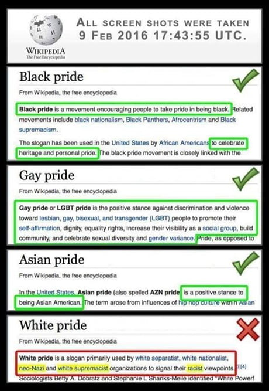
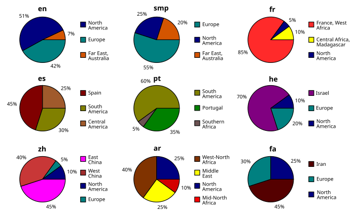

Wikipedia Advice
Editing Advice, Commentary, & Philosophy
1. Advice For Beginner Wikipedia Editors
1.1. Summarized Advice For Beginners
Summary from Tetrapteryx:
- Focus on the pages that get the most pageviews.
- Do use mainstream sources.
- Do use Wikipedia’s dispute resolution processes.
- Don’t try to immediately overhaul high-importance articles, especially not without reliable sources.
- Do start small.
- Do focus on identifying specific problems, and suggesting specific improvements.
- Don’t try to take on the world.
- Do build a relationship with other editors, and with each other.
1.2. Focus On Editing What You’re Most Interested In
Advice: Only focus on writing or editing what you’re interested in. For the longest time, my reach exceeded my grasp when I wanted to learn literally everything. Unless you have a mindset like that, you can skip this section.
There are literally thousands of Wikipedia articles out there that anyone could use their time and effort to improve. But it simply isn’t worth trying to work on all of them. There’s many other things that one can value doing more in life, namely raising a family, and working to make money to support said family. I would advise most people to avoid making editing Wikipedia their life. Most editors have few children and will die childless, so they will be replaced by more biologically successful organisms.
One reason why some people may find it difficult to edit Wikipedia is that they only read and focus on the articles that get the most views. However, the articles that get the most views are typically the articles that have had the most work done into editing and improving them and expanding their length, so there isn’t much room for improving or contributing to them. By contrast, the articles that get fewer pageviews are typically the ones are much more likely to need expansion and contribution. That often doesn’t happen since a few people view them each month.
The most widely viewed articles aren’t necessarily the most important articles. There are some important articles which should get more pageviews, but don’t. Often times, the reason is that they are underdeveloped and/or not well-known.
1.3. Watchlist Advice
Read: Help:Watchlist.
It’s not worth it (and even counterproductive) to include Wikipedia pages that have lots of ongoing edits and editors on them in your watchlist. Most of the time when this happens, such pages involve contentious topics. Generally speaking, trying to edit a page on a contentious topic to make its perspective less biased is usually futile. It’s also easy to get banned when voicing heretical views on contentious topics. Wikipedia is not a free speech zone at all.
Pages that have a lot of ongoing edits (including talk page edits) tend to fill up the entire watchlist with their edits. There’s usually so many other editors watching and itching to edit such pages anyway. It’s simply not worth it for most people to watch over those edits, unless you really, really care about the topic. If you know that your desired changes are controversial, then they will probably get drowned out by all the other editors who are much more emotionally and morally invested in the page than you are.
Instead, I recommend restricting one’s watchlist to include articles that are only occasionally edited or at most edited a few times each day. One can watch their watchlist pages to monitor and make sure that one’s own edits are not overridden by other editors who are ignorant and/or don’t know what they’re doing. Hypothetically, it is possible that a page that I really care about could hypothetically become viral and attract a lot of editors who make a lot of recent edits on that page which clog up the watchlist. However, this is unlikely. And if I really do care about the page, then I will probably pay close attention to it anyways and strive and fight for what I can to help the page remain oriented towards truth and rationality. Fortunately, I don’t usually edit or focus on particularly contentious pages on Wikipedia
If you want to have multiple watchlists to make it easier to view different topic categories, then you could create separate Wikipedia alt accounts to have different watchlists. This is well complimented by the multi-account containers add-on in Firefox. Personally, I’ve never found a need or convenience to do this, but it could be done hypothetically.
1.4. Maximizing Impact And Outreach
One point needs to be stated before anything else: The most useful thing anyone can do on these articles is keep watch over them, and undo vandalism when it happens. The largest problem with most of the articles is that they aren’t being watched by anyone who cares about them. This means that people can remove chunks of sourced material without giving a reason, or add material without a source, and the changes often won’t be undone.
One of the most important ways to earn respect is by contributing to articles on a wide variety of topics, including those that have nothing to do with race or intelligence. Editors always are taken more seriously at Wikipedia if they appear devoted to improving a diverse range of topics, and the more friends you make on those articles, the more people you’ll have to potentially defend you if that becomes necessary. It’s also important to form a relationship with editors who care about improving race and intelligence related articles, since these are editors you might be interacting with periodically. The following are five editors who might be able to help you improve these articles, if you request their help in their user talk.
The Wikipedia reliable sources noticeboard (WP:RS/N) of occasional discussions that over the future of the sources and information stated and cited in wikipedia articles.
There is a strong correlation between how many pageviews an article has, and how many other articles link to it on Wikipedia.
Note: External links in Wikipedia articles typically include the “nofollow” attribute, so adding external links to Wikipedia articles does not improve the SEO of the websites being linked to.
1.5. Advice For Finding Sources
Recommendations of fast and convenient ways to find reliable sources to cite in Wikipedia articles?
It depends on where the sources for what you want to write about exist (or are available):
- Yandex and Perplexity AI are a good start for finding publicly online information.
- Google Books helps for books that have been scanned (and parsed) into its database.
- Newspapers.com is good for writing information about local historical events and places.
- The Wikipedia Library can help you access many sources for free which most people cannot access.
- Google Translate helps for translating information that is only found in other languages.
If you’re unsure about whether a source will count as a reliable source or not, then you should check WP:RSP (Wikipedia:Reliable sources/Perennial sources).
If you can’t find the source listed there, then you should search the Wikipedia and Help namespaces with “Is X a reliable source?”
1.6. Advice For Writing
When creating or expanding wikipedia articles, the information that should be included into the article should simply be written as bullet points. You can later rearrange and tweak those bullet points, before eventually expanding them into paragraphs. By contrast, if you focus on writing paragraphs every time you read new information, then you divide your focus by constantly looking for the next thing to be included into the paragraph or by using cohesive devices, which can conflict between things that are already written or about to be written. These conflicts slow down the writing process. They don’t need to be completed until after you have found and paraphrased all the information that you want to the article to include.
WP:THREE suggests that when writing an article, the three best reliable sources with the most significant coverage are often sufficient to prove WP:Notability (and thus inclusion) into Wikipedia and/or avoid deleting from Wikipedia.
We don’t need a complete article, we just need one which is capable of being accepted. We genuinely do not want perfection in drafts! We are sometimes shocked and surprised if we see it. What we want to do is to help folk leap the hurdle of acceptance. Once accepted then most new articles are found by way more editors and are worked on, sometimes badly, mostly well, by many more people.
As a draft, most other editors will not find it. Thus your only objective is to show that it is notable and thus that it is accepted. The entire treatise is not required.
You only need sufficient to prove notability. It is all still in the history. Nothing is lost.
Being the first person to create an article can give you some leverage over for styling the article according to your preferences. For example, being the first main contributor to an article can allow you to choose a preferred date style (unless the article subject’s location mandates a preferred style).
Generally speaking, editors have more leverage for deciding what to do with Wikipedia pages that have not been edited in a very long time (several months or years) and have few pageviews. Few editors tend to contest edits in such situations.
When researching and writing for Wikipedia articles, the entire process can feel multi-dimensional. What I mean by that is that writing an article usually requires reading multiple sources and compiling them into a single, most comprehensive source. Wikipedia also records previous versions of pages, and sometimes you may want to retrieve old wikitext from an old version to incorporate into the current version. Usually, there are also articles that are closely related to the one(s) that you’re focusing on, which may need to be edited too. There are also talk pages and activity from other users to keep track of. All this combined, the entire process can be overwhelming. For big articles, it’s simply not possible for someone to be aware of all this stuff simultaneously.
To submit a draft for AfC review, add this template to the top of the draft: {{subst:submit}}.
Note: Once you are an autoconfirmed user (achieved by making at least 10 edits and having an account that is at least 4 days old), it will be possible for you to create articles by simply moving drafts from the draft space or user space into the mainspace, provided that the page(s) are ready for the mainspace.
1.7. Wikipedia Space Pages
Whenever you are viewing a page on Wikipedia that is inside the Wikipedia (WP) space, you have to be careful about what you’re viewing. Just because a page is in the WP space and other editors link to it to support their views, that doesn’t necessarily mean that it’s an official policy. It’s easy to miss some infobox templates which may appear at the top of some pages:
- {{Information page}}: “This is an information page. It is neither an encyclopedia article nor one of Wikipedia’s policies or guidelines”.
- {{Supplement}}: “This is an explanatory essay _. This page provides additional information about concepts in the page(s) it supplements. This page is not one of Wikipedia’s policies or guidelines as it has not been thoroughly vetted by the community.”.
- {{Essay}}: “This is an essay. It contains the advice or opinions of one or more Wikipedia contributors. This page is not an encyclopedia article or a Wikipedia policy, as it has not been reviewed by the community.”
If you are in a talk page discussion or debate and one of the talking points revolves around official Wikipedia policies, then you have to be careful to avoid citing a page in your favor that is technically not an official policy. For example, a user might link to WP:RSP to justify their citation of a perennial source that is generally reliable, according to past consensus(es). If you disagree, then you should point out that the Perennial sources page is not an official Wikipedia policy.
1.8. Helpful Wikipedia Manual Pages For Beginner Editors
There are a lot of manual pages that beginners could read. I recommend completing the Wikipedia Introduction tutorial for anyone who is completely new to Wikipedia, and browsing whatever manual pages seem helpful.
I’ve seen many policy, information, template, etc pages for understanding how Wikipedia works, how to edit, etc. I thought it was helpful for me when I was starting out (and hopefully others) to list all the pages that I thought were worth reading or at least understanding the nutshell of. If I didn’t list a page here, then I probably thought that it wasn’t important enough to be worth reading.
Manual of Style:
- https://en.wikipedia.org/wiki/Help:Cheatsheet
- https://www.mediawiki.org/wiki/Help:Magic_words
- https://en.wikipedia.org/wiki/Wikipedia:Manual_of_Style
- https://en.wikipedia.org/wiki/Wikipedia:Manual_of_Style/Lists
- https://en.wikipedia.org/wiki/Wikipedia:Manual_of_Style/Infoboxes
- https://en.wikipedia.org/wiki/Wikipedia:Manual_of_Style#Verb_tense
- https://en.wikipedia.org/wiki/Wikipedia:Manual_of_Style/Words_to_watch
- https://en.wikipedia.org/wiki/Wikipedia:Piped_link#Transparency
- https://en.wikipedia.org/wiki/Wikipedia:Writing_better_articles#Principle_of_least_astonishment
- https://en.wikipedia.org/wiki/Wikipedia:Linter
- https://en.wikipedia.org/wiki/User:Vami_IV/Completionism
- https://en.wikipedia.org/wiki/Wikipedia:Signs_of_AI_writing
- https://en.wikipedia.org/wiki/Template:Wikidata
- https://commons.wikimedia.org/wiki/Template:Wikidata_Infobox
- https://en.wikipedia.org/wiki/Wikipedia:Namespace
- https://en.wikipedia.org/wiki/Wikipedia:Wikipedia_abbreviations
- https://en.wikipedia.org/wiki/Help:Searching
Sources & Citations:
- https://en.wikipedia.org/wiki/Wikipedia:Acceptable_sources
- https://en.wikipedia.org/wiki/Wikipedia:Verifiability#What_counts_as_a_reliable_source
- https://en.wikipedia.org/wiki/Self-publishing
- https://en.wikipedia.org/wiki/Wikipedia:Verifiability#Self-published_sources_(online_and_paper)
- https://en.wikipedia.org/wiki/Wikipedia:Reliable_sources/Perennial_sources#Sources
- https://en.wikipedia.org/wiki/Wikipedia:Deprecated_sources
- https://en.wikipedia.org/wiki/Wikipedia:Citing_sources
- https://en.wikipedia.org/wiki/Wikipedia:Inline_citation#When_you_must_use_inline_citations
- https://en.wikipedia.org/wiki/Wikipedia:Likely_to_be_challenged
- https://en.wikipedia.org/wiki/Wikipedia:Content_that_could_reasonably_be_challenged
- https://en.wikipedia.org/wiki/Wikipedia:When_to_cite
- https://en.wikipedia.org/wiki/Wikipedia:Citation_overkill
- https://en.wikipedia.org/wiki/Wikipedia:Citing_sources#Bundling_citations
- https://en.wikipedia.org/wiki/Wikipedia:Manual_of_Style#Punctuation_and_footnotes
- https://en.wikipedia.org/wiki/Wikipedia:Manual_of_Style#Punctuation_inside_or_outside
- https://en.wikipedia.org/wiki/Wikipedia:Common_knowledge
- https://en.wikipedia.org/wiki/Template:Reference_page
- https://en.wikipedia.org/wiki/Wikipedia:Citation_templates
- https://en.wikipedia.org/wiki/Template:Efn
- https://en.wikipedia.org/wiki/Template:Sfn
- https://en.wikipedia.org/wiki/Template:Harvard_citation_no_brackets
- https://en.wikipedia.org/wiki/Template:Template_link
- https://en.wiktionary.org/wiki/Template:quote-web
- https://en.wikipedia.org/wiki/Template:Refideas
- https://en.wikipedia.org/wiki/Template:Crossreference
- https://en.wikipedia.org/wiki/Template:Excerpt
- https://en.wikipedia.org/wiki/Template:Section_link
- https://en.wikipedia.org/wiki/Template:Better_source_needed
Core Policies:
- https://en.wikipedia.org/wiki/Wikipedia:Eight_simple_rules_for_editing_our_encyclopedia
- https://en.wikipedia.org/wiki/Wikipedia:Ignore_all_rules
- https://en.wikipedia.org/wiki/Wikipedia:Editing_policy
- https://en.wikipedia.org/wiki/Wikipedia:Deletion_policy
- https://en.wikipedia.org/wiki/Wikipedia:Edit_requests
- https://en.wikipedia.org/wiki/Wikipedia:Consensus
- https://en.wikipedia.org/wiki/Wikipedia:Don%27t_revert_due_solely_to_%22no_consensus%22
- https://en.wikipedia.org/wiki/Wikipedia:Reverting#Avoid_reverting_during_discussion
- https://en.wikipedia.org/wiki/Wikipedia:Edit_warring#The_three-revert_rule
- https://en.wikipedia.org/wiki/Help:Edit_summary
- https://en.wikipedia.org/wiki/Help:Edit_summary#Edit_summary_properties_and_features
- https://en.wikipedia.org/wiki/Wikipedia:List_of_policies
- https://en.wikipedia.org/wiki/Wikipedia:List_of_guidelines
Moving & Merging Pages:
- https://en.wikipedia.org/wiki/Wikipedia:Moving_a_page
- https://en.wikipedia.org/wiki/Wikipedia:Moving_a_page#Moving_over_a_redirect
- https://en.wikipedia.org/wiki/Wikipedia:Disambiguation
- https://en.wikipedia.org/wiki/Wikipedia:Disambiguation_dos_and_don%27ts
- https://en.wikipedia.org/wiki/Wikipedia:Broad-concept_article; [[WP:BCA]]
- https://en.wikipedia.org/wiki/Wikipedia:Merging
- https://en.wikipedia.org/wiki/Wikipedia:History_merging
- https://en.wikipedia.org/wiki/Wikipedia:WikiProject_Abandoned_Drafts
Deleting Pages:
- https://en.wikipedia.org/wiki/Wikipedia:Template_index/Cleanup
- https://en.wikipedia.org/wiki/Wikipedia:Guide_to_deletion#Deletion_process
- https://en.wikipedia.org/wiki/Wikipedia:Proposed_deletion
- https://en.wikipedia.org/wiki/Template:Proposed_deletion
- https://en.wikipedia.org/wiki/Wikipedia:Speedy_deletion#G6
- https://en.wikipedia.org/wiki/Category:Candidates_for_technical_speedy_deletion
- https://commons.wikimedia.org/wiki/Commons:Deletion_requests
- https://en.wikipedia.org/wiki/Wikipedia:Viewing_and_restoring_deleted_pages
- https://en.wikipedia.org/wiki/Wikipedia:Requests_for_undeletion
Licensing And Images:
- https://en.wikipedia.org/wiki/Wikipedia:Non-free_content_criteria
- https://en.wikipedia.org/wiki/Template:Non-free_use_rationale
- https://en.wikipedia.org/wiki/Template:Non-free_media_data
- https://en.wikipedia.org/wiki/Wikipedia:Copyrights
- https://en.wikipedia.org/wiki/Wikipedia:Close_paraphrasing (you want to avoid doing this)
- https://en.wikipedia.org/wiki/Wikipedia:Copyright_violations
- https://commons.wikimedia.org/wiki/Commons:Image_guidelines
- https://en.wikipedia.org/wiki/Wikipedia:Manual_of_Style/Images
- https://commons.wikimedia.org/wiki/Commons:File_captions
Blocks, Bans, Sock-Puppetting, And Canvassing:
- https://en.wikipedia.org/wiki/Wikipedia:Blocking_policy
- https://en.wikipedia.org/wiki/Wikipedia:Banning_policy
- https://meta.wikimedia.org/wiki/Global_locks
- https://en.wikipedia.org/wiki/Wikipedia:Temporary_accounts
- These three topics are each related to each other:
Finding Help And Answers To Questions:
- https://en.wikipedia.org/wiki/Help:Introduction
- https://en.wikipedia.org/wiki/Wikipedia:Mentorship
- https://en.wikipedia.org/wiki/Wikipedia:Teahouse
- https://en.wikipedia.org/wiki/Wikipedia:Peer_review
- https://en.wikipedia.org/wiki/Wikipedia:Reference_desk
- https://en.wikipedia.org/wiki/Wikipedia:Glossary
Other Informative Pages:
- https://en.wikipedia.org/wiki/Wikipedia:Biographies_of_living_persons
- https://en.wikipedia.org/wiki/Wikipedia:Protection_policy
- https://en.wikipedia.org/wiki/Wikipedia:User_access_levels
- https://en.wikipedia.org/wiki/Wikipedia:Requests_for_page_protection/Increase
- https://en.wikipedia.org/wiki/Wikipedia:Content_assessment/B-Class_criteria
- https://en.wikipedia.org/wiki/Wikipedia:Content_assessment/C-Class_criteria
- https://en.wikipedia.org/wiki/Wikipedia:Translation
- https://en.wikipedia.org/wiki/Template:Userbox
- https://en.wikipedia.org/wiki/Wikipedia:Gaming_the_system
- https://en.wikipedia.org/wiki/Wikipedia:Civil_POV_pushing
- https://en.wikipedia.org/wiki/Wikipedia:Guide_to_requests_for_adminship
1.9. Other General Editing Tips
- “WP:MANUAL_SHORTCUT_LINK” can be used to refer to the Wikipedia manual pages. Links styled this way can be used in both edit summaries and talk pages. Linking to policy and information pages can help make your edits more likely to stay, while being better received.
- To put multiple paragraphs in a list item, separate them with {{pb}}.
- The pipe trick can made editing easier, but there is a caveat to it, when you’re using the pipe trick while editing wikipedia entries as (.wml) text files on your hard drive.
Wikipedia always expands wikilinks that use the pipetrick, before saving the edit and rendering the text.
- https://en.wikipedia.org/wiki/Wikipedia:Piped_link; [[WP:NOPIPE]]
- https://en.wikipedia.org/wiki/Help:Pipe_trick; [[H:PT]]
- You can link to sections within an article without reloading the page by just prefixing the section name with “#” in the first component of wikilinks. However, if that section of the article is transcluded in a different page, then the wikilink won’t work. In such cases, you can just include the article name before the hashtag, and the wikilink will work inside the article and any articles that transclude that section of it.
The {{wiktionary}} template could help you make a lot of new edits to Wikipedia.
Example: {{wiktionary|objective|objectivé}}
- To link to Wiktionary, use the shortcut [[wikt:]].
- Know the difference between these two:
- {{wikt|cult}} (displays the wiktionary box).
- [[wikt:cult]] (displays inline wiktionary link).
To link to media on Wikimedia Commons, use this template: {{commons category|CATEGORY_NAME}}.
Example: {{commons category|Kittredge Mansion}}
- Wikipedia:Copying within Wikipedia. Nutshell: When copying content from one article to another, at a minimum provide a link back to the source page in the edit summary at the destination page and state that content was copied from that source. If substantial, consider posting a note on both talk pages.
- Regarding questionable and/or uncited claims:
- You should add the {{cn}} to any claim that is likely true, but missing a reliable secondary source.
- If you see claims that are unverified (and likely false), you can just remove them, per WP:BURDEN.
- Do not use {{cn}} because you don’t understand a statement, or feel that “non-expert” readers are likely to be confused. Use {{Clarify}}, {{Explain}}, {{Confusing}}, {{Examples}}, {{Why}} or {{Non sequitur}}, as appropriate, instead.
- To archive a webpage for the current date, you can go to https://web.archive.org/web/save/[URL-YOU-WANT-TO-SAVE] to make the Wayback Machine take a snapshot of the current state. This is what happens when you use the “Save Page Now form at https://archive.org/web/web.php.
- The attribute |url-status=live can be added to some sources to toggle whether the live article or the archived version should be displayed first by default.
When using the same reference twice in a Wikipedia article, does the cite book or whatever template between the ref tags always have to come before all the other mentions that cite that reference? Or it is it possible to add a name attribute to the reference angular bracket, and then use the secondary naming tag before that one appears in the Wikipedia article file, like in a leading section?
The order does not matter. However, I personally recommend creating and using a dedicated references section. It makes the article text look cleaner and thus easier to edit in the browser editor and text editor program. It also makes it easier to retrieve all the references needed for transcluding some section of an article into another article.
2. Biases On Wikipedia
2.1. Wikipedia Has Humanist/Leftist Biases
Wikipedia is an exhaustive, nonpartisan encyclopedia filled with (allegedly) balanced sources curated by thousands of attentive editors. De jure, it is supposed to be neutral, unlike partisan opinionated narratives that are backed by weak or false evidence.
Unfortunately, Wikipedia has obvious biases, especially left-leaning biases, due to:
- The partisanship of Academia.
- The partisanship of the Mainstream Media.
- The partisanship of the editors themselves.
A lot of the active or prolific Wikipedia editors don’t state their biases, even if they are left-wing. Hiding one’s biases is always an advantage for editing articles towards one’s point of view. There are some Wikipedia editors that openly display a bias in favor of left-wing ideas. However, this actually disadvantages them, since they’re showing their biases. Most left-wing or left-leaning users don’t do that. No right-leaning editor should ever reveal their right-wing biases, since they only have much to lose from stating them on their user page and other places.
Wikipedia editors who are left-leaning often think that they are actually “centrist”, since Wikipedia and The Establishment are so left-leaning in general. They are essentially deluded into believing that left leaning people and biases are actually centrist, when they’re not, and they are actually contrary to reality.
2.2. Examples Of Wikipedia’s Leftist Biases
Wikipedia usually uses language to directly include bias. For example, conservative political figures/activists are nearly always labeled as such in the first sentence of their articles, whereas liberals are simply “journalists” without an ideology. As another example, some articles may include direct value judgements inside the articles.
Wikipedia Is Anti-White, Hypocritical, And Endorses Race Denialism:
- Wikipedia Is More One-Sided Than Ever – Larry Sanger.
- Censorship PSA: Wikipedia Admins Deleting Indo-European Facial Reconstructions.
- The Wikimedia Foundation uses millions of dollars of donations to fund anti-White organizations.

Also consider how the Great Replacement is described as a conspiracy theory, even when the European percentage of the populations of most Western countries has undeniably been going down and is projected to keep going down for the rest of the century.
Related: Mentions of Political Extremism in English Wikipedia – David Rozado.
I could give many more examples, but the point should be evident. It’s clearly indefensible to say that Wikipedia does not have an anti-white bias. I say this as a mixed-race person. An editor who tries to make the white pride article more neutral and balanced could feasibly be accused of being a white supremacist and blocked from Wikipedia if this essay were an official policy. Some Wikipedians are so obsessed with confronting white supremacy that they ignore anti-white POV problems on the encyclopedia.
Sometimes, Wikipedia reveals its biases not by stating outright falsehoods, but rather by ignoring truths. For example, “Christian supremacy” is defined as the belief that “Christianity is superior to other religions”. This is a strange definition, given that the belief in one’s own religious superiority is common in nearly every faith. There is no article on “Islamic/Muslim Supremacy”, although there is an article on Islamic extremism.
A good case can also be made that Wikipedia isn’t firmly biased enough on some topics. For example, Wikipedia tries to take a neutral stance on whether there’s a God or not. Many other philosophical, biological, economic, linguistic, etc articles should also take a firmer stance in favor of the truth.
I’ve noticed that many of the more left-wing sentences on Wikipedia are more likely to include multiple citations rather than the usual one or two for each sentence. It’d be interesting if some corpus compiled all the sentences from every Wikipedia article and sorted the senses by how many citations that they have. My prediction is that the censors that have more citations than usual will feature both citations that back up more statements and they will on average be more leftist than the average or most realistic public consensus perspective. I should Google and see if anybody has done any analysis or studies on this.
Another reason why we should expect there to be a correlation between sentences that present left-wing political views, and the number of citations that a sentence has is that political phenomena are easier to understand than technical STEM phenomena. If an editor is politically biased, then they don’t need to understand the details of whatever they’re siding with too much as long as they understand that the conclusion aligns with their beliefs, and that they can cite to reinforce their beliefs. When I’m reading articles about technical subjects on Wikipedia, I rarely see more than one or two citations for each sentence because these topics are much harder for most people to understand and they often require reading dense jargon-heavy academic books and papers in order to retrieve the citations.
Related: Wikipedia has Cancer: Why you should not donate to Wikipedia.
2.3. Reducing Humanist/Leftist Biases on Wikipedia
Wikipedia articles generally reflect the status quo. Wikipedia articles that get sufficiently high pageviews (enough to be watched by multiple editors) can be thought as having a sort of “Overton Window” regarding how far they can be shifted towards wokism versus realism.
If you know that the material that you are reading has a bias(es), then you can account for it in your mind as you read it. But if you don’t know of a bias and you’re on the fence, then you can be persuaded towards the direction of the bias without realizing it. That’s where this section comes in handy. Before one can edit Wikipedia to project one’s worldview onto the encyclopedia and all who read it, one must understand how to counter Wikipedia’s bias and compete against other editors to project one’s vision onto the encyclopedia.
There are a lot of Wikipedia editors out there and people in general who will learn about Wikipedia guidelines and decide that they should blindly follow them and obey them even if they personally disagree with them. It’s one thing if you are agreeing or going along with them in order to avoid getting banned or having your privileges restricted on the website. But it’s another thing when you uncritically accept that as part of your values and you assume that anything that opposes those values is a bad thing.
If you’re trying to edit an article to make it more non-partisan, it helps to prepare your edits offline with a text editor and computer files. When you’re finally ready to commit your changes to Wikipedia, you should do them all at once. This decreases the probability that opposing editors will see your edits and be able to act quickly on them. By contrast, if you make one edit at a time and allow more time to pass between edits, then other editors are more likely to see the page(s) and revert them or otherwise reverse your changes.
It can help to sandwich controversial edits between multiple non-controversial edits. But there’s still a chance that someone could see them, if they’re looking scrutinizing closely enough.
Often times, careless editors will rollback edits, while reverting good edits that were rolled back in addition to supposedly bad edits. If a Wikipedia user rolls back a whole bunch of bad edits that you disagree with, it can be beneficial to redo some of the less controversial and less questionably good edits. It’s also easier to do this task when copying, pasting, and editing wiki markup text inside a text editor.
2.4. Confronting Wikipedia On A BLP Article As The Subject
If the subject of a BLP article disputes the claims in the article, they cannot edit the article directly because that would be a COI. They might be able to file a WP:BLPREQUESTDELETE for the article, but they are unlikely to succeed in getting the article deleted if there are enough sources that talk about them which pass WP:GNG (general notability guidelines). If they dispute information that’s written in the article, and they choose to edit or remove such information, then they would have to prove their identity to the Wikimedia Foundation (WMF), so that Wikipedia’s administrators can verify that they are who they say that they are. The best route for doing that would be WP:UAA, the Usernames for Administrator Attention Noticeboard. According to Doug Weller, WP:AN would also work for a situation like this.
One ought to recall the phrase, “On the Internet, nobody knows you’re a dog”.
Some people get mad at Wikipedia over its text, while not getting mad at the journalists who wrote the works cited in the articles. Wikipedia cannot do much to correct journalists on one’s behalf. If a journalist article has errors, then the subject should contact them. If it’s truly a reliable source, then the author will correct any mistakes or at least note denials by the subject. Wikipedia repeats what is said elsewhere. The Wikipedia community does not investigate or reach conclusions on its own. If the subject wants to correct the record, then they should contact the journalists to fix any mistakes that they’ve made, and Wikipedia will follow suit. That is the best solution.
2.5. Blocks, Bans, And Appeals
If you are blocked and want to get unblocked, then WP:Guide to appealing blocks is the most important page to read for figuring out what you to need to do. Most of the other related pages to blocks aren’t as helpful or necessary for reading. If you could only read one page for getting unblocked, then that would be it. However, that page is also misleading to some extent. Although I followed all of its advice for getting unblocked, I still didn’t get unblocked. The Wikipedia admins and community are not as rational nor as forgiving as Wikipedia’s stated policies, manuals, and documentation would have readers believe.
Other Helpful Pages:
2.5.1. Contentious Topics
Among the designated contentious topics list, these are the only topics that I have any interest in to the point where I may edit them, and thus have to be really careful about editing:
- Race & Intelligence: The intersection of race/ethnicity and human abilities and behavior.
- BLP: Living or recently deceased subjects of biographical content on Wikipedia articles.
- Politics: Post-1992 politics of the United States and closely related people.
- Infoboxes: Discussions about infoboxes, and edits adding, deleting, collapsing, or removing verifiable information from infoboxes.
- Gender: Gender-related disputes or controversies or people associated with them.
- Article Titles And Capitalization.
If you’re ever blocked due to an arbitration community enforcement action, then your best option is to persuade the admin who blocked you to reverse their decision. It’s not a good idea to appeal a block on the administrators’ noticeboard or among the arbitration community. If your appeal is rejected, then the block could morph into a community block, which would then be even harder to appeal than the original block. By contrast, if you appeal to the administrator who blocked you, and they reject your appeal, then you will not get a community block. Hypothetically, you could also wait six months or a year to appeal the block. If you wait an entire year, then you could make a normal unblock appeal, which would be reviewed by a different administrator than the one who blocked you.
2.5.2. How To Talk About Contentious Topics
Unless you have the will and a lot of time on your hands, it’s best to avoid editing on contentious topics (and on talk pages in general). You cannot say that racial disparities in intelligence are caused by genetics under any circumstances. Merely saying that can be enough for an editor to get indefinitely banned or blocked without any warnings, any fair trial, or any hope of a successful appeal. I speak from experience.
However, you can absolutely say that there are observed IQ differences between races. Not even Wikipedia disputes this. The first paragraph of race and intelligence states that IQ has been observed to differ between races. If you do state this however, you will have to pretend that the IQ gap is environmental, lest you risk getting blocked without a warning.
The stable article version for race & intelligence also says that the validity and reliability of IQ is disputed, so Wikipedia considers that a valid view which can be expressed on talk page. Ergo, you would inevitably have to put up with bad-faith debaters who deny IQ, if you insist that IQ is valid. It’s better for race realists to never state their position.
2.5.3. Hiding From CheckUsers
If you are going to sock-puppet, then you should never keep the same watchlist on both sock-puppet accounts. It will make it easier for you to make the same edit(s) to the same page(s) without realizing it, which can get you caught by the CheckUsers.
CheckUsers can see every account that has ever logged into Wikipedia or Wikimedia at a given IP address. CheckUsers can also see when an account has logged in. So if you have ever logged into a bunch of accounts within a short time span (which is common among sock-puppeteers who create multiple sock-puppets all at once), then that would be a huge red flag from their perspective. It is not true that accounts that make no edits at the same IP address are not blocked. They will, if CheckUsers and administrators decide to do so.
So, if you are blocked and you have alternate accounts, then you should only log into just one of them at most. Any accounts that you log into could potentially be blocked if a CheckUser runs a check of if your account(s) is/are auto-blocked.
If your IP address is blocked but you need to make some edits, then your best bets are to try to edit as soon as when the daily block on your IP address expires, at a different location (e.g. a library), or through a residential proxy address. If your IP address was blocked, then you can try to appeal the IP block via the WP Unblock Wizard.
2.5.4. The Problems And One-Sidedness Of ZC’s Indefinite Block On Wikipedia
Context:
- Best Version of Zero Contradictions’s Wikipedia User Page, before Global WMF Ban.
- The Initial Report & Block – UTC.
- My Failed Appeal on the Administrator’s Noticeboard.
The Problems and One-Sidedness of the Block:
- The official blocking policy states that editors should be given a warning before they ever get blocked. But I was never given any warnings at all.
- The admin completely ruled out topic bans, even though the vast majority of my edits have absolutely nothing to do with contentious topics. This applies even more so to all my mainspace edits (>99%).
- I didn’t make any particularly controversial edits in the article mainspace.
- Most of my mainspace edits survived into the current versions. I had a valid rationale for every edit.
- Even the edit where I added most of the text that Jordan Lasker wanted to add still had some good sources that should’ve already been cited in the article.
- Every controversial and non-sanctioned thing that I said was on talk and discussion pages.
- The indefinite block was made 12 hours after the report, so I had no time to comment on it.
- The block was indefinite rather than temporary. For such a harsh punishment, all it took was for me to make just one mistake (i.e. saying and mentioning anything about my website on Wikipedia) and for a few editors to just merely glance at the things that I’ve been off-wiki to want to file a report against me.
- It took me three days to fully understand the blocking policy, the appeal process, to understand why I did wrong, to write my appeal, to follow the procedure, and to read and endure all the factually incorrect things what everybody thought and said about me.
- There’s no evidence that any admins actually read anything in my unblock appeal.
Only two editors referred to anything that I wrote in my unblock appeal, and neither was even an actual administrator.
- The indefinite block was endorsed unanimously from 10 to 1 among all participating editors, and 5 to 0 among admins. Every endorsement was justified on merely disliking my views expressed off-wiki.
- BlueSonnet’s review felt more like an administrator following policy than the actual administrators, but he/she still made the same mistake of believing that I am racist and didn’t consider a topic ban.
- It didn’t matter what I said in my appeal, what I could do to resolve their concerns, or that I made a sincere promise to never say forbidden beliefs on talk pages ever again.
- No one who endorsed the block evaluated what I could potentially contribute to Wikipedia.
- They clearly never thought about it, but blocking me forever actually makes Wikipedia worse off, since it prevents me from making contributions to the mainspace.
- My editing history shows that I clearly could’ve made many great mainspace contributions if I was allowed to continue editing.
- Across all my Wikipedia accounts (including ones that I have abandoned for clean starts), I have more mainspace contributions than many of the editors who endorsed blocking me, including Simonm223, bluethricecreamman, Blue-Sonnet, Katzrockso, Ltbdl, FactOrOpinion, Maltazarian, etc. These editors make most of their edits on talk and discussion pages. Even worse, many of the mainspace contributions that they have made were actually anti-truth or low effort. They don’t edit or expand actual articles very often, so it’s clear that they aren’t truly focused on improving the actual content of the encyclopedia. They’re more focused on blowing hot air, blabbing, and impeding real progress on talk pages. Why should these morons have any influence over whether actually productive editors like myself get blocked?
- If the initial indefinite block wasn’t bad enough, when my appeal was rejected, my ban and block on Wikipedia became even more severe by morphing into a community ban and block.
- On 2026 June 25, my community ban from Wikipedia was upgraded to a global ban from all Wikimedia sites.
The {{WMF-legal banned user}} template replaced both my user page and talk page.
- According to an automated email that I received from the WMF, I was globally banned based on the WP:CHILDPROTECT policy, since my website hosts a controversial essay.
- Even though I don’t support legalizing pedophilia, I support an age of consent that’s common in Europe, and I support whatever proves to be most beneficial to society, that’s not good enough. Apparently, supporting any sexual activity involving minors is a violation of the Child Protect policy.
- It also doesn’t matter that I explicitly support only following the law, or that I don’t make any edits related to this sensitive topic on Wikipedia. I was globally banned anyway. I am certainly not a legal risk to the Wikimedia project, nor does preventing me from editing benefit the project.
- My Juna Urso Tropika account was blocked just for using the same IP address, even though all 56 of its 2026 edits were positive, productive changes.
3. Advice For Talk And Discussion Pages
3.1. Never Say More Than You Have To
3.1.1. Why Discussion Pages Are Usually A Waste Of Time
Talk page discussions are usually a waste of time for the same reasons why democracy is efficient. Talk pages have the same flaws as democracy, namely the lack of meritocracy. The people making the decisions are not necessarily the most qualified. A single individual opinion or vote often gets drowned out by everybody else’s opinions, even if it presents the best reasoning. Decisions are vulnerable to corruption and meddling.
Participating in tense Wikipedia talk page discussions is comparable to gambling. If you can successfully get the changes that you want (which depend on the policies and known sources), then it can be profitable for ensuring lasting changes. But if you lose the arguments, then you will have wasted all the time that you spent on them.
Personally, I strongly recommend avoiding talk pages and discussions whenever possible. They usually matter less than people think, considering all the time that people invest into them. It’s tempting to speak one’s mind and opinions on talk pages, and it can feel fun. But usually, nothing changes or things don’t go the way you want them to. The people who talk the most are usually time wasters.
Although most of my edits were not on talk pages, I still wish that I had made even fewer talk page edits than I did. In hindsight, most of them simply weren’t worth the time. A few times, my talk page interactions helped me accomplish what I want and/or they helped me understand Wikipedia better. But in most cases, there were far more important and productive things that I could’ve done instead. I could’ve avoided getting banned if I never wrote anything on talk pages.
In general, the less time you spend on talk pages, the better.
3.1.2. Avoid Talking Time Wasters
Whenever possible, you should avoid engaging with talking time wasters. Talking time wasters are wasting their own time. And if you engage with them, then they will waste your time too.
Related: WP: You have a right to remain silent.
If you want someone to stop posting on your talk page, then you can request that they stop. In most cases, they should or must stop posting on your talk page, per WP:USERTALKSTOP. But one should also be careful not to abuse this privilege, per WP:SOMTP.
3.1.3. Why You Should Hide Your Beliefs
At face value, Wikipedia’s documentation and stated preference for neutrality would have readers believe that editors are respectful of controversial points of view. But this is naive. It is possible to get indefinitely blocked for having controversial beliefs, even if you are a good editor with uncontroversial values who follows the official policies. It happened to me, and it can happen to anyone. The Wikipedia establishment, admins, and community will not hold back from applying double standards against you, if they want to. That’s why it’s better for one to never state their beliefs. Even better is to avoid talk pages and discussions whenever possible. They usually matter less than people think.
Anything that you say on Wikipedia can be used against you in discussions. This especially applies to your user page(s) and talk page(s) more than any other pages. Those are among the two most common pages that people will read first when they’re trying to learn about you and figure out what your interests, motivations, and biases are. If opposing editors can think of a way to point out your an experience, bias, or anything else, then they certainly will, if they believe that it would discredit you in such discussions, in their favor.
It has become increasingly apparent to me that the main consequence of putting anything of any significance on ones Wikipedia user page is to have it used as (invariably facile) ’ammunition’ against one in any ensuing disagreement.
I am who I am. That’s all you need to know.
It almost never benefits you to show your beliefs, biases, or power-level, nor is it ever necessary.
3.1.4. Tips For Hiding Your Beliefs
If you have any offline Internet profiles which reveal any of your biases, then you should avoid linking or referring to them anywhere on Wikipedia, including your Wikipedia user page, even if it may be tempting. I linked to my website on my userpage and referred to it just a few times on Wikipedia, and that was enough to cause me to get blocked indefinitely. While I don’t like hiding my views, it wasn’t worth getting blocked just to reveal them, on account of how much of my own time got wasted.
I linked to my website on my userpage essentially because I just wanted to express myself, which is what user pages are mainly for. Ideally, I like my Internet presence as Zero Contradictions to be clearly connected across every website. I referred (yet never linked) to my site when discussing contentious topics when it was relevant to what I was saying, and partly just because I wanted to talk about it. However, I wouldn’t have done that at all, if I knew that merely referring to external sites is not allowed either.
Userboxes can also indicate conflicts of interest and biases in yourself and others.[1] Any information and any userboxes shown on your Wikipedia user page can also pose a potential doxxing risk. If you’ve already mistakenly revealed any biases, then it’s worth asking an admin to delete your Wikipedia user page and its page history. You may then recreate the userpage by pasting back in the information and userboxes that you want to keep, for which I recommend using an offline text editor. This should ideally be done before your userpage ever gets archived by an archival site of some sort.
3.1.5. Prioritize Your Statements
It’s a good idea to not make multiple replies to the same user, because then they might only respond to one of your replies and then have responded to everything that you said, even when they really didn’t. Instead, if you have multiple points that you need to make, then it’s probably better to just make one reply at a time and make one argument after another so that they will be forced to address all of your arguments. If you make multiple arguments and a comment or reply, then they may only address one of the things that you said (usually only the weakest talking point) while ignoring everything else. In both cases, it is better to just make one argument at a time.
However, it’s also important to use your judgment. In some cases, it may be better to just lay out all your arguments at once when you’re trying to make a firm case for something. It is best to do this when you know that there is no one opposing you and/or you’re trying to support a more controversial idea. It may be less effective when you’re trying to challenge something. It depends on the context.
3.1.6. Know How To Phrase Your Statements
Citing highly specific Wikipedia policies is considered wikilawyering. Since everybody has biases and goals, most editors wikilawyer to some degree. In practice, “wikilawyering” is a label reserved for the most egregious cases of misinterpreting the policies or for people who disagree with one’s POV. All biased editors tend to cite specific policies that favor their desires (or they deliberately misinterpret and/or misapply policies), while ignoring others. Unless there are a lot of credible editors agreeing with you, then it does not work in your favor to have loose interpretations of the policies.
Wikipedia editors tend to argue similarly to robo-lawyers. They will bring up really anything that can discredit opposing views, as long as their talking point(s) are arguably within the Wikipedia rules and guidelines. Wikipedia editors may also say things in order to provoke the temper from other editors, because an editor who loses their temper will automatically lose the discussion favor of the opposing, passive aggressive editors. Wikipedia editors tend to load their messages with adjectives and adverbs, especially when they are going back-and-forth. It’s thus a general norm that everyone (including yourself) should do the same, if you want people to consider your edits just as strong as everybody else’s.
You should always assume your reply will be interpreted in the worst possible way by the admins and dishonest leftists. Saying that something is an activist organization deploying questionable practices is enough. It helps to get the last word.
If you are arguing with other editors to exclude something from an article, it’s usually probably a stronger argument to say “it’s redundant to include X because X is already implied by Y” than to say “it’s not necessary to include X because X is already implied by Y”.
3.2. Voting in Discussions, Debates, and Polls
Sometimes one can say: “per nom” (i.e. nomination) or “per X” (i.e. some other commentator whose arguments you agree with).
Generally, you shouldn’t spend too much time if you don’t have to. Sometimes, it’s best to avoid specific arguments when Wikipedia’s policies for allowing or not forbidding something are unclear, since more specific arguments can be more vulnerable to refutation in replies. A very general response typically suffices. And one can always get more upfront if significantly challenged in the replies below your vote.
3.3. Know Your Rights And How To Warn Users
If another user breaks WP:AGF (e.g. claiming that you’re lying), then you should notify them of the WP:AGF policy.
Even better would be to include the {{subst:uw-agf1}} or {{subst:uw-agf2}} templates on their user talk page.
If you have warned them two times and they proceed to violate WP:AGF a third time, then you can and should escalate the situation to the Administrator’s noticeboard, where an administrator could leave the {{subst:uw-agf3}} or {{subst:uw-npa4}} template on their user talk page.
This will warn the other user that they will be blocked from editing if they violate WP:AGF another time.
Related: Ignore personal attacks. – This is good advice, but it’s still a good idea to leave a warning on a user’s talk page if they make a clear personal attack.
Templates For Various Warnings To Place On User Talk Pages – This page is very helpful. It shows all sorts of warnings that you can give to problematic users, which can either get them to stop their bad behavior and/or strengthen your case if you need to complain about them to an administrator.
3.4. Taking A Break
If you need to take a break from Wikipedia and want to avoid thinking about it, then you can just log out on one device, and that will log you out on all of your devices. This will enable you to continue viewing Wikipedia, without having to see any discussion notifications, revert notifications, or user talk page notifications. It’s especially a good idea to do this if you’re currently involved in a contentious argument, and you just want to ignore it for a while, and/or cool down.
If you ever decide to leave a discussion, it always helps to make the last point, if you can. Or you could just say that you aren’t going to comment in the discussion any further, to signal to others that you have aren’t going to respond anymore, not that you don’t have any counters to the opponent’s comment(s).
Per WP:SECURITY:
Wikipedia’s “Log out” link logs out all the user’s current sessions. If a logged-in device is lost or stolen, changing the password and logging out on another device may help to prevent future abuse of the account on the lost device.
3.5. Signing Comments
Why doesn’t wiki software automatically sign people’s talk page comments, instead of making people do it manually?
Wiki software doesn’t automatically sign talk page comments for several philosophical reasons:
- Distinguishing comment types: Not all edits to talk pages are “comments” that need signatures. Users might be reorganizing discussions, adding templates, or making other maintenance edits where a signature would be inappropriate.
- Technical flexibility: Manual signing gives users control over how and when they sign. Some comments genuinely don’t need signatures (like minor formatting fixes or automated bot messages), and forcing signatures everywhere would create clutter.
- Encouraging mindful participation: Having to manually sign with `~~~~` makes contributors more conscious of their participation in discussions. It’s a small barrier that encourages people to think before posting and take ownership of their contributions.
- Historical consistency: MediaWiki and other wiki platforms developed when the norm was manual signatures. Changing this now would break established workflows and muscle memory for millions of experienced editors.
- User agency: The wiki philosophy generally favors giving users control rather than making assumptions about what they want. Auto-signing would remove that choice.
- Technical complexity: Implementing smart auto-signing that knows when to sign and when not to would be more complex than it appears, especially considering the many edge cases and different types of talk page interactions.
Some wiki implementations and browser extensions do offer auto-signing as an optional feature, but keeping it manual by default preserves flexibility while maintaining the collaborative culture that makes wikis work effectively.
I forgot to sign my talk page comment. How do I sign unsigned comments? Is it possible?
Yes, it’s definitely possible to sign unsigned comments on Wikipedia talk pages! Here are the standard ways to handle this: For your own unsigned comments:
- Add your signature manually - Simply edit the page and add `~~~~` (four tildes) after your unsigned comment. This will automatically expand to your username and timestamp when you save the page.
- Use the unsigned template - Add `{{unsigned|YourUsername|timestamp}}` after your comment. You’ll need to figure out approximately when you posted it for the timestamp.
The easiest approach is usually just to add the four tildes (`~~~~`) right after your unsigned comment and save the page. Wikipedia will handle the rest automatically.
If someone else’s comment is unsigned:
- You can add `{{unsigned|IP address or username}}` after their comment
- If you don’t know who made the comment, you can check the page history to see who added it
- Sometimes you’ll see `{{unsigned-IP}}` used for anonymous IP editors
A few notes:
- It’s considered good etiquette to sign your posts, but forgetting occasionally happens to everyone
- Other editors might add an “unsigned” template to unmarked comments they find
- For your own comments, adding `~~~~` retroactively is perfectly fine and commonly done
The Wikipedia community is generally understanding about unsigned comments since the signing system isn’t always intuitive for newer editors.
3.6. Writing Edit Summaries
Personally, I tend to write long edit summaries so that I can summarily list multiple reasons and justification for my edits. The more detailed your edit summaries are, and the less controversial your edits are (among Wikipedians), the less likely you are to have to participate talk pages to achieve your desired changes. This is exactly what you want. It’s always better to write a detailed edit summary than to potentially get involved in an annoying and avoidable discussion.
Since edit summaries are limited up to only 500 characters, I have to my edit justifications laconically. (Frankly, everyone should do that on discussion pages, to save everybody else’s time.)
When undoing another person’s revision, the default text which states that which edit you are undoing by a specific user. In these cases, you can sometimes increase the character space for writing your edit summary by removing the wikilinks and some of the text enumerating the edit. As long as it’s clear which revision you’re doing (and why), you should be fine.
Examples Of Wikitext For Undo Edit Summaries:
Undid revision [[Special:Diff/1331327575|1331327575]] by [[Special:Contributions/Kairotic|Kairotic]] Undid revision [[Special:Diff/1331327575|1331327575]] by Kairotic. Undid revision by Kairotic. Rv edit by Kairotic.
If you want to add information that you know is true, but only known anecdotally, then you should not state that you learned this information anecdotally in your edit summary. Admins or prolific Wikipedia editors are likely to review recent edits and will probably revert your edit if they if you say that you heard about anecdotally or through hearsay. Instead, if you want the information to be added and yet preserved, it’s better to just add it in and to attach a citation needed tag to the information that you want to add. This way, it’s explicitly marked that that information should have a reliable secondary source found and attached to it. And if the information is probably true or it sounds like that it’s probably true, then most people are unlikely to revert it.
In some cases, not providing an edit summary is better than providing a vague one. In particular, avoid creating a redirect with an edit summary like “Created redirect page”, since that is less descriptive than the automatic summary that will be provided if the field is left blank.
To view an editor’s edit summary statistics, see: https://xtools.wmcloud.org/editsummary.
3.7. Edit War Game Theory
If you are in or at risk of going into an edit war, the most important thing that you must avoid is going over three edits within 24 hours. If you decide that you’re going to go into an edit war, then you should never make the first revert. Due to the game theory of edit reversions, the first editor (editor A) to make the first revert is the most likely to go over three edits:
- Editor A makes a revert. Editor B makes a revert.
- Editor A makes their 2nd revert. Editor B makes their 2nd revert to counter Editor A.
- Editor A makes their 3rd revert. Editor B makes their 3rd revert to counter Editor A.
- If Editor A makes a 4th revert against Editor B (or anywhere on the same page), then Editor A could be banned from Wikipedia, due to WP:3RR, the three revert rule.
As soon as an admin notices:
- Editor A will be blocked from Wikipedia for violating WP:3RR.
- The article will be restored to the status quo ante-bellum.
- Editor B and other editors will have free reign to edit the article however they want.
- Editor A cannot do anything about it, due to being blocked.
If Editor A makes a 4th revert, then Editor B’s best course of action is to just let the article stay as is. Likewise, if Editor B knows that Editor A is likely to make a 4th revert, is unaware of the WP:3RR policy, and unlikely to stop edit warring, then Editor B can just let Editor A mess up.
One should not interrupt their opponent when their opponent is making a mistake. – Napoleon Bonaparte.
If you know that an enemy editor is likely to counter a revert and reciprocate an edit war, then there may tricks that you can do to avoid making the first revert. For example, if they add a new section to the article that you disagree with, then it’s better to just delete the section, rather than reverting their edit that adds the section, since that’s less likely to count as a manual revert by the wikimedia software. If intermingling edits were made in between the time when they add the section, then you can’t simply revert the first edit where they added the section, due to the conflicting editing history. So if you can just delete the entire section, then you will avoid making the first revert, which will ensure that the other editor is more likely to break the 3RR rule more than you.
Note: Two reverts is sufficient for a set of edits to be labeled as an “edit war”.
Edit wars are undesirable from a social standpoint. They also look bad on your editing contributions history. However, this is an option that you could do if you just want to avoid bad edits from other editors. Edit wars should only be reserved if:
- You know that the outcome will follow in your favor (you are Editor B, not Editor A).
- You judge that it’s not worth the effort to stop the edit war by starting a discussion on the talk page.
- You know that the other editor is naturally disruptive and likely to mess up (which would effectively get them blocked, the easy way).
Even more ideally, you could just start a discussion on the talk page, and then other editors shouldn’t make changes to the article, per WP:STATUSQUO. That’s technically not an official Wikipedia policy, but it will make the other editor look bad if they try to edit while a discussion is in progress. Talk page discussions can be tedious and annoying, but they’re still generally more preferable to edit wars.
If you see an ongoing edit war, and you want to stop it sooner, rather than later, you can report it to the WP:AN3 noticeboard: Wikipedia:Administrators’ noticeboard/Edit warring. It’s a separate noticeboard that is dedicated exclusively for edit wars. It’s less well-known than WP:ANI, and thus less crowded with posts. WP:AN3 may thus be a faster way to get admins attentions, compared to WP:ANI.
As for WP:AN2, it used to exist, but was deleted in 2006, since a majority of editors decided that there was no reason for it to exist.
3.8. Dispute Resolution
WP:DRNC: If the only thing you have to say about a Wikipedia edit is that it lacks consensus, it’s best to not revert it.
WP:ONUS: The responsibility for achieving consensus for inclusion is on those seeking to include disputed content.
If you are having a dispute resolution with another editor, then you probably won’t have too much trouble as long as you have a fairly high tolerance for handling unconstructive people and can remain civil for a while. If you are having problems with another editor, then following the advice from the following links will help:
- WP: Dispute Resolution.
- WP: Third Opinions For Active Disagremments. – Note that the third opinion may disagree with you.
- Administrator’s Noticeboard.
- Administrator Intervention Against Vandalism Noticeboard.
3.9. Other Talk Page Tips
It doesn’t look good to edit a statement at WP:ANI or a talk page after it’s been replied to. The best practice is to strike-out anything that you are deleting with a new comment appended (with a new time code) to add additional statements. That’s actually the best practice in all discussions on WP. It makes it easier for editors to follow the flow of the conversation without looking at diffs. On ANI, this requirement is somewhat heightened.
To stay updated on talk discussions, You can click “subscribe” at top right for small threads.
If your name is linked (*usually with an @ before it), you’ll get a ping via {{ping|USERNAME_TO_PING}}.
More Information: Help:Notifications.
These documentation and template pages are helpful specifically for editing talk pages:
- Template:Talk quote inline.
- Template:Outdent. – This makes talk pages much more readable.
- Note: {{od}} only controls how long the redirection line should be.
- You must still manually choose how many “:” characters (tab indents) to use in the source editor.
- Wikipedia:Casting aspersions.
- Wikipedia:Snowball clause.
4. Recommended Tools For Editing Wikipedia
4.1. Offline Text Editor
I recommend keeping text files on your computer hard drive that contain an exact copy of the Wikipedia article’s current text:
- If another editor reverts your changes, it’s easier to recover and adjust them accordingly.
- It can save your work as you go along.
- The provided in-browser wiki text editor is difficult to scroll.
- Vim and emacs offer many navigation commands, text manipulation tricks, etc.
For Emacs specifically, I recommend using mediawiki.el to enable syntax highlighting and other features for editing WML text. Unfortunately, it lacks features that I’m used to using with org-mode in Emacs, like foldable header sections and imenu integration. Nevertheless, it’s still the best mode for editing WML text. As of June 2026, I am unaware of any superior Emacs modes or packages for editing in Wiki Markup language. Hypothetically, it’s possible to edit the `mediawiki.el` file and add missing features to it someday, but one must be proficient in using Emacs Lisp.
Although it can be tempting to just edit and edit inside your all off-line text editor, you should remember to periodically upload your changes to Wikipedia. This makes it easier to track changes, show people what you changed in each edit (assuming that you want to do this), and increases your edit count. You should generally be doing this when your edits are non-controversial and likely to be well perceived by others. It also makes it easy to revert only one or two things that you made which could sometimes benefit yourself and potentially other good-faith users.
4.2. Browser Extensions
Some useful browser extensions that I recommend for Wikipedia editors include:
- The Web Archives add-on for Firefox.
- The Wayback Machine add-on for Firefox.
4.3. Recommended Gadgets
It’s a good idea to enable gadgets inside Preferences tab. After enabling them, you should learn how to use them. Once you know how to use them, it may even be worth customizing them.
I personally use:
- Short description helper
- Auto Hot Cat
- Syntax highlighting
- Orange text for disambiguation page links
- Twinkle
- Javascript Wiki Browser (I’ve never used this yet (as of June 2026), but maybe I will someday.)
- i
- i
Tools For Automating The Creation Of New Userboxes:
List of bots that can run on Wikipedia articles:
Scripts:
- https://en.wikipedia.org/wiki/User:Eejit43/scripts/article-cleaner
- https://en.wikipedia.org/wiki/User:10nm/beta.js
How do I make automated edit summaries like “reverted good faith edit” by so-and-so?
This requires using Twinkle. When possible, it’s a good idea to use this tool. Writing better edit summaries (especially ones which imply acknowledging good-faith) will make people approve of them more and make you look more professional.
Beth MacDonald (Hordaland) stopped editing Wikipedia in 2017 June 17, and became deceased by 2018 June 25. However, she left behind multiple useful resources as her sub user pages:
reFill is a tool that expands bare URL references semi-automatically, hosted on Toolforge at toolforge:refill/ng. It adds information (page title, work/website, author and publication date, if metadata is included) to bare URL references, and does additional fixes as well (e.g. combining duplicated references). The tool is written in Python and licensed under Simplified BSD License. The tool is an open-source replacement of Dispenser’s Reflinks. The source code is available on GitHub. The templates created automatically by the tool need to be reviewed to ensure that they are accurate, as they are often not. – WP:ReFill
Also see: https://refill.toolforge.org/ng/.
5. Advice For Doing Procedural Tasks
5.1. Advice For Translating Foreign Language Articles Into English
My Proposed Algorithm For Translating Foreign Language Articles Into English, when you don’t know the foreign language (as of ):
- Use the browser Google Translate browser add-on/extension to translate all the text into English.
- Copy all the English into a text editor.
- Edit it to fix obvious translation errors, as needed.
- Edit the text to include appropriate wikilinks. Use the Template:Interlanguage link ({{ill}}) accordingly for foreign language wikilinks that don’t exist on the English Wikipedia.
- Use Template:Langx to mark the text in the original languages, when needed.
- Translate each source into English:
- Use the citation templates wiki text.
- Copy and paste the information into the parameters accordingly.
- Be mindful of what text you place in the |trans and |trans-title parameters.
- Some German words to be mindful of, when translating the sources:
- unveränderte: unchanged.
- Abschnitt: section.
- Auflage des: Edition of the.
- Abgerufen am: Retrieved on.
- verfügbar: available.
- Zum Beispiel: for example.
- hrsg.: ed. (edition).
- siehe: see.
- siehe dazu: see also.
- Preview the wikitext output in a sandbox or the appropriate wikipedia section location.
- Publish if everything looks good.
5.2. Checking And Deciding If Wikilinks Can Or Should Be Simplified
An algorithm for checking if wikilinks can be simplified in simpler and more human readable forms:
- Check if the right side of the link that follows the pipe character already has a Wikipedia article.
- Check if any suffixes or morphology can be moved outside the square brackets to simplify the wiki link.
- Check if there exist a redirect to the article before the pipe bar.
- Create a redirect if it’s appropriate and useful, which may require human judgment.
- If all these conditions are aside, then simplify the wikilink.
The result is articles would use less text and characters, especially in cases were Wikipedia editors didn’t know how or weren’t aware of simpler wikilinks that could be used instead. Less hard drive space would be used. Wikilinks would usually appear simpler for human editors, except in cases where the algorithm didn’t act as it should, according to human judgment. However, if a human does not know that a redirect already exists and they are an existing Wikipedia article name, then simplifying the wikilinks could potentially make them harder for human Wikipedia editors to read, so it wouldn’t necessarily always simplify things.
5.3. How To Change The User Access Level Required To Edit A Page
There is a page on Wikipedia that keeps getting vandalized. I am only an extended confirmed user. What should I do if there should be a change to the user access level required to edit the page?
If you believe a page needs stronger protection than what’s currently in place, here are your options:
Request protection at the right venue:
- Go to Wikipedia:Requests for page protection (WP:RFPP)
- Explain the vandalism pattern you’ve observed and why you think the current protection level is insufficient
- Administrators will review your request and decide whether to apply semi-protection, extended confirmed protection, or another level
What to include in your request:
- Link to the page
- Brief description of the vandalism (what kind, how frequent)
- Links to recent examples in the page history if possible
- Why you think the current protection level isn’t working
In the meantime:
- Continue reverting vandalism when you see it (using the undo button)
- Report persistent vandals at Wikipedia:Vandalism reporting (WP:AIV) if they continue after warnings
- Make sure vandals have been properly warned on their talk pages before reporting
As an extended confirmed user, you can still edit pages with extended confirmed protection, so you’re able to help maintain the page. Administrators are generally responsive to protection requests when there’s clear evidence of ongoing disruption that the current protection level can’t handle.
If you want to gain rollback user rights, then you need to either request them from an administrator, or become an administrator yourself.
5.4. Advice For Wikimedia Commons
Should images be lossless compressed before being uploaded to Wikimedia Commons?
See: Commons:Preparing images for upload.
What are the recommended Wikimedia Commons guidelines for filenames of multimedia?
See:
Also see:
5.5. Algorithm For Finding Images To Upload To Wikipedia Commons
The most efficient and ideal process for finding images to upload to Wikipedia Commons is to:
- Download the Wikipedia mobile app.
- Click on the places tab, and in the bottom center of the screen.
- Look for places near you or places where you’ve been that have Wikipedia articles and their locations on the map (sometimes the exact geographic coordinates will be slightly off, and it would be worth correcting them if you know how to).
- Open a maps and route a path to the site location (if you aren’t already there).
- Take high-quality photos of the featured landmark.
- Upload the best photo(s) to Wikipedia comments under a CC0, CC BY, or CC BY SA copyright license.
Alternatively, you could look up the location’s website’s contact information on Apple or Google maps and ask the location maintainer(s) if someone could take photos of the site and email or send them to you under one of those three copyright licenses.
6. Editors & Edit Counts
6.1. Edits vs Utility
Pre-reading: A Critique of “Utility”.
Let’s think about utility with respect to the number of edits that one makes on Wikipedia. Making more edits does of course correspond with greater contributions, but not always. The number of edits does not necessarily indicate how much any editor contributes as a whole:
- A person’s effort can be greatly exaggerated in their edit count via automated edits, like the kind done with AutoWikiBrowser.
- Some people who have high edit counts actually add negative value towards the encyclopedia, since they promote left-wing propaganda and such.
- Some people may have lots of edits on their user page(s) just because they like editing their own pages. Usually, these edits don’t provide much or any value for anyone else besides themselves.
- Edit wars can inflate an editor’s edit count to make it seem that they have contributed more than they really have. By contrast, people who mainly add well-cited and non-controversial content to the site tend to make edits that are less controversial and less likely to be reverted by other editors, even though it results in lower edit counts for those editors.
- Some people spend more time on talk pages and namespaces outside the article mainspace.
- It’s easy to make lots of low effort edits. It’s harder to make lots of high effort edits.
6.2. Manual Edits vs Automated Edits
It takes only a moderate commitment to edit, but it takes a serious commitment to write. Manual edits are far more impressive than automated edits because those are the edits that actually add content to the site. They’re the whole reason why the encyclopedia is worth reading at all in the first place.
Steve Pruitt is commonly cited as the editor with the highest edit count on Wikipedia. He is certainly a far more prolific editor than most other editors, and I appreciate the work that he’s done on the site. However, most of his edits were automated, so he is overrated in my opinion. His edit count is the highest is simply because he’s obsessed with finding large numbers of edits that he can automatically do. Goodhart’s Law applies here. It would be more appropriate to measure the prolificness of editors by how much quality work they are able to produce manually.
Chiswick Chap is a more impressive editor, in my opinion. He has made over 320,000 manual edits to Wikipedia, and he currently has the 140th most prolific number, measured by the number of edits. Almost all (or all?) of the editors who have more edits than Chiswick Chap made automated edits.
6.3. Evaluating Editor Importance
Some editors are obviously more important than others. But how do we determine who the (most) important editors are? What people edit about should be considered. An editor who mainly focuses on improving vital articles (e.g. User:Phlsph7) is usually more important than an editor who mainly focuses on relatively unimportant and obscure articles that few people care about.
WP: List of Wikipedians by article count is probably generally a better metric for approximating an editor’s contributions than edit count. However, it only counts the articles that an editor has created, not how good or how important their contributions were, or how much text and sources they wrote and cited.
Furthermore, there are editors who are willing to do the necessary work that keep the project running that no one else is willing to do. Each of those editors are really important. Yet, they’re often overlooked since: 1. they usually don’t have the highest edit counts, and 2. their contributions aren’t easily visible to most readers or even most editors.
Perhaps the best estimate of any individual person’s overall contributions to Wikipedia is to examine:
- The number of manual mainspace edits that they have made without automation.
- The average amount of text that they add to Wikipedia in the mainspace.
- Which namespaces they usually make their manual edits in.
- The user’s biases and how much benefit or damage they do towards promoting correct truths.
- What they contribute to the project that most people (or no one) do not or cannot.
While mainspace edits are generally more important than edits to talk and discussion pages, most automated edits are probably made to mainspace pages. So even if someone does have lots of mainspace edits, if most of them are automated, then that may not be a true reflection of how much irreplaceable effort they make to the mainspace. Manual mainspace edits are the most important edits of them all. Manual mainspace edits are the edits that create content which make Wikipedia what it is.
“High effort” usually implies that an edit is positive. However, in a very literal sense, high-effort edits aren’t necessarily productive. It is possible and common for people to make high-effort, counterproductive edits. The word “contribution” also tends to have a positive connotation, but not always. The word “edit” has a neutral connotation. So, it doesn’t make much sense to measure the progress of anything with edits, given that edits can be good or bad.
6.4. Typology Of Wikipedia Editors
These categories are modeled on my own experiences and observations. Many editors fit into one category. Others are best described by an overlapping of two or more categories:
- Daily readers cite whatever factoids they find from reading their favorite news outlets every day.
- Subject matter experts create articles about things that they are knowledgeable about.
- Research editors create articles and research things that they are interested in. They tend to create articles from scratch, rather than editing existing articles.
- Casual editors edit whatever they’re interested in and/or naturally come across. There is a lot of variation in their experience levels. While research editors focus on adding content, casual editors focus on editing existing content and may still make important contributions nonetheless.
- Basic editors mainly correct minor mistakes, like bad grammar, occasional typos, etc. Unlike casual editors, they have more limited skills, knowledge, and desires for making more advanced edits. Electric Gecko (User:LiamM32) is a perfect example.
- Infrastructure editors do important work that is critical to keeping project operations running that no one or almost no one else wants to do.
- Activist and/or paid editors edit Wikipedia in order to promote their worldview, narrative, biases, or bottom line. They each have an agenda(s). There is a lot of variation regarding each activist editor’s willingness and commitment to following Wikipedia’s policies. They may disclose their COIs, or they may hide them behind anonymity. Their experience levels are all over the place too.
- Talking time wasters spend most of their time on talk and discussion pages blowing hot air, rather than contributing actual content. They are less important than they think they are.
- Trolls and vandals add no value whatsoever to the encyclopedia. They are the most obvious stereotype and demographic type of editor but they are worthless because they have no practical value and they are not a real editor who contributes to the site.
- Retired editors have edited for a while, but they decided to stop editing for some reason.
These reasons may range from death, to disinterest, to reevaluating their assessment and value in editing and their impact, etc.
They be any one of the previous types of editors that I have mentioned.
- For example, Randall Holmes stopped editing Wikipedia after he was turned off by a discussion war on debating the definition of a function across hundreds of talk page comments, and such.
- ChopinAficionado is another example. He used to believe that his editing on Wikipedia had huge impact. But he was turned off by combating all the enemy editors and their biases. He was also banned from editing, and later decided that Grokipedia is a superior encyclopedia for people to use instead, in spite of its hallucination and other flaws.
As for me personally (User:Zero Contradictions), I would categorize myself as a hybrid between a casual editor, subject matter expert, and activist editor.
The most dedicated, most prolific Wikipedia editors tend to strictly follow nothing but the rules. These people take pride in being Wikipedians, but they typically have no original thoughts, beliefs, values, or agendas. Their beliefs could be described as mainstream NPCs. Unlike NPCs though, they are unusually far more productive at creating quality content than most people. It’s unsurprising that the most prolific Wikipedians are NPCs. They spend all their time reading and writing mainstream opinions. Wikipedia also forbids original research and original thought, which selects for NPCs and filters out people who do have original ideas.
6.5. Talking Time Wasters
6.5.1. Equivalent Terms And Disclaimer
Equivalent Terms:
- Talking Time Wasters – My Preferred Term.
- Talk Page Time Wasters.
- Discussion Page Time Wasters.
- Discussion Warriors.
Talking time wasters spend (significantly) more time on talk and discussion pages babbling and blowing hot air than actually contributing to the mainspace. They have nothing better to do besides making noise and trouble on talk pages and blocking progress. Many of them are quite content with wasting their lives on their pointless nonsense.
There are many important discussions which take place on discussion pages. Discussion pages are necessary in order for edits to debate and explain how to improve pages. Sometimes, edits cannot be made to the mainspace until debates are first resolved on discussion pages. Any highly productive editor will inevitably have to make some talk page edits. However, it’s concerning and an indication of time-wasting when someone spends most of their time on discussion pages.
6.5.2. Motivation & Rationale
Talking time wasters have an exaggerated sense of self-importance. Talk page time wasters are driven by a desire to feel important, rather than to actually be important. They think that they are being productive because they are “participating in the wiki process”. Talking time wasters usually feel that they are wasting less time than they really are. Since they’re usually side of the consensus, what they support usually succeeds. By contrast, if someone usually loses discussions for what they support, then they will feel that discussion pages are more of a waste of time. And they are.
Talking time wasters also believe that they have more influence than they actually do. They tend to be virtue-signalers. They usually just repeat the same opinions and talking points as most other editors, or they’re drowned out by what everybody else is saying. One person doesn’t have much effect in a discussion when there are dozens of other people talking at the same time. This is especially true in support | oppose polls and consensus discussions, where there may be dozens or even hundreds of people talking and trying to get POV across.
It’s possible for a single person to be influential in heavily populated discussions if they make an important point that no one else has brought up. But that rarely happens for most users, so I recommend that it’s better to stay away from such discussions in general.
6.5.3. Discussion Wars
“Edit warring” is a term used to describe when editors who disagree about the content of a page repeatedly override each other’s contributions. “Discussion warring” could be a term to describe when disruptive editors repeatedly make many low effort or bad faith attempts to obstruct or hinder more constructive editors from editing. Edit wars can contain anywhere from 2-4 edits or however many edits it takes before an edit warrior is banned by the 3RR rule. By contrast, discussion wars can go on for about indefinitely, until the discussion is closed. Discussion wars tend to involve tactical nihilism, wikilawyering, biases, dishonesty, and tedious disputes.
Discussion wars are inevitable since disagreements between editors are common. It’s one thing if they happen to a productive editor occasionally. However, editors who regularly participate in discussion wars are generally unproductive time wasters. They increase the organizational memory and bureaucracy that governs Wikipedia, rather than making it better.
It makes little sense to spend much time on talk pages if you end up encountering a person(s) who clearly has plenty of time to talk and will talk as much as he pleases. It’s pointless to talk with people who spend most of their time talking and babbling, especially when their talking points often have a little effect beyond strengthening existing resolutions and dogmas. The next section shows some indications when you may be dealing with such a person.
6.5.4. Cues & Signs
It’s usually easy to identify which editors actually improve the mainspace because they usually list the main articles that they have worked on their user pages. By contrast, users who mainly babble and blow hot air on discussion pages usually don’t list the articles that they have worked on their user pages, precisely because they have a few real accomplishments to list on their user pages to begin with.
Viewing an editor’s edit count in XTools also reveals a lot about them. Editors who mainly edit in the Mainspace with manual edits are valuable. Edits within talk namespaces are obviously talk edits. However, edits within the Wikipedia namespace often tend to be talk edits too, especially if the editor in question is not an administrator. The Wikipedia namespace includes places like the Administrator’s Noticeboard, Arbitration Community pages, and other Wikipedia namespace pages where there’s often a lot of talk and little productivity.
Some examples of talking time wasters include (but are absolutely not limited to): Simonm223, bluethricecreamman, Blue-Sonnet, Katzrockso, Ltbdl, FactOrOpinion, Maltazarian, SuperPianoMan9167, and ButteyFelicity. All these users have less than 5000 mainspace edits, as of . I have little respect and admiration for people who waste other people’s time, rather than contributing actual content.
ButteyFelicity has made some productive edits (namely to List of murdered American children), but most of his edits waste everybody else’s time arguing for suboptimal article renames. Even though mainspace edits make up half of his total edits, most of those were not productive either. They mainly consists of putting required notices that a renaming discussion was in progress. As usual, the banners were usually removed and the article title stayed the same after the renaming discussion took a week. It can be helpful to place banners in articles or sections about an issue that needs to be fixed if you’re unable to do it yourself, but it doesn’t take much effort to add banners to articles.
6.6. Some Editors Are Not Replaceable
One of the best essays on editing philosophy that I’ve ever read: The Iceberg – Perry Olum.
The idea that every editor is replaceable is just wishful thinking. It’s a myth uttered in response to boastful behavior. It’s a way to summarily dismiss all of a user’s good contributions, even if they outweigh their bad attributes. It’s a mantra used to justify banning or blocking prolific editors.
Whether an editor is replaceable or not depends on what their interests are and how many other people can and will do the things they do or used to do. The people who believe that all editors are replaceable only see the tip of the iceberg (actions that can easily be replaced by others). They don’t see or acknowledge contributions that aren’t easily replaceable.
As an extreme thought experiment, if every active Wikipedia editor were to stop editing, Wikipedia’s growth would probably vanish almost completely, and the site would fall apart due to trolls and vandals. There are very few people in this world who are capable and willing to edit Wikipedia outside the pool of active editors. By and large, the people in the current pool of active editors are among the most qualified and well-suited people in world to do what they do.
The idea that editors are all just interchangeable cogs falls apart when:
- Studying neurodivergence.
- Analyzing the especially niche interests that many people have.
- Realizing that intelligence and cognitive abilities are not equally distributed among humans.
The reality is that every new productive editor who joins the project with niche interests and contributions adds something special that almost no one else could contribute. Some improvements would take years, decades, or eternity to get done without the editors that we have. The historical development of new technologies and open source software projects are analogous to this situation in many ways. New things never happen until someone makes them happen.
Among my own contributions, I also see many articles and edits which could’ve hypothetically been written years earlier. But they were never written nor published until I stepped up to the plate and wrote them myself. These are a sample of what I’ve done:
- Progress and Poverty – Mostly written in 2014 & 2025, could’ve been published in 2001.
- Spanaway Junior High School shooting – Published in January 2026, could’ve been published in 2001.
- Demurrage currency – 90% written in April & May 2025, could’ve been mostly written in 2001.
- Interest-free economy – Written in 2025, could’ve been mostly written in 2020.
- Mathematical linguistics – Published in March 2025, could’ve been published in 2001 or early 2010s.
- Adam Lanza – Written in 2026, could’ve been written in 2015, based on secondary source dates.
- Walmart+ – Published in May 2026, could’ve been published in 2022.
This thesis is further supported when we observe the creation dates of articles. The XTools gadget can conveniently display an article’s creation date at the top of each article’s page. There are easily millions of articles which could’ve hypothetically been created earlier in 2001 when Wikipedia first started. But they were never created until years or even decades later. There are still many more articles and useful edits which could be created in the present-day, but they don’t exist because no editors have put in the time to write them yet. Articles never exist unless someone makes them exist.
Hypothetically, we could go back even further, to some extent. Wikipedia was created in 2001 and the World Wide Web was developed during the 1990s. However, both of these creations could’ve hypothetically been developed earlier if there were more intelligent people focused on bringing them into existence during earlier dates.
6.7. Advice For Increasing Mainspace Edit Count
Disclaimer: I don’t recommend artificially inflating anyone’s edit count with useless edits. The purpose of writing this section is to suggest strategies for making more positive contributions.
- Focus on editing what you’re most interested in.
- Write new articles that should exist, but don’t yet.
- Learn how to use gadgets, tools, and browser extensions for making good edits to articles.
- Use Short Description Helper gadget to add short descriptions to articles that don’t have one yet, or to improve existing short descriptions.
- Use Twinkle to create welcome sections on talk pages for other users who don’t have one can also help increase your edit count.
- Use the HotCat gadget to easily add categories to articles.
- Follow Orwell’s six rules for writing to rephrase and improve existing article text.
- Improve article organization and add missing subsection headings.
- Update and/or expand lead sections to adequately summarize articles.
- Et Cetera.
Wikipedia tools for making multiple concurrent mass edits to multiple pages include the AutoWikiBrowser and the JavaScript Wiki Browser (JWB). Using AutoWikiBrowser (AWB) requires administrator approval. There are less than 3000 Wikipedia users in the entire world who have access to AWB. So before you could ever think about using it, you’d need to make at least 250-500 total mainspace edits, and probably more than that if many of your edits are small, minor, and/or low-quality. It will also be more difficult to get approved to use AWB if you have a questionable reputation on Wikipedia, or are in conflict with many other Wikipedia editors. Intuitively, I would think that the administrators would probably approve someone who has made over 1000-2000 high quality edits and has a good reputation on Wikipedia.
As of June 2026, I’ve never done any mass edits myself. However, if you need to do mass edits, then I predict that the JavaScript Wiki Browser is probably the easiest way to accomplish this, since it doesn’t require the administrator approval of the AWB.
Bots can also do mass edits, but all bots have to be approved by administrators.
Edit Privileges And Stats
Once you surpass 1000 edits, other editors can add you to the Missing Wikipedians list, if you haven’t made any edits within a year and nobody knows why you’re gone.
If you have made 1000+ edits on the English Wikipedia, then you are among the top 49,000 - 73,000 most active editors on the English Wikipedia (as of 2026). In other words, there are only 49,000 – 73,000 other people in the world who have made as many edits as you have, depending on which metric you use.
6.8. Thoughts On Each Of The Different Language Wikipedias And Race Realism
6.8.1. Introduction & Statistics
The population of editors of each of the Wikipedia language versions is largely determined by the racial characteristics of each of those populations. It’s not surprising that the English Wikipedia is so large when English is the most spoken language in the world with a high population of intelligent people. Most people overlook the latter mentioned factor, due to ignorance or denial of race realism.
Censorship in China is the primary reason why the Chinese/Mandarin Wikipedia isn’t larger than it is, despite China having the world’s second largest population and an enormous number of relatively intelligent people compared to the rest of the world. The Chinese/Mandarin Wikipedia is banned in mainland China, hence why it’s so small compared to the other Wikipedias, even though there is a very high population of native Mandarin speakers in the world. The logographic writing systems, simplified vs traditional versions, etc of those languages also pose problems, but they are very minor.


6.8.2. Admin To User Ratios
- I suspect that the main reason why the Spanish Wikipedia has one lowest admin to user ratios is because they’re simply aren’t enough reasonably intelligent Spanish speakers who are qualified enough or wanting to become an admin of the encyclopedia.
- The Japanese Wikipedia also has a very low admin to user ratio, but this is probably because Japanese people are intelligent and relatively unlikely to vandalize things (and to a lesser extent because the community has strict rules and harsh penalties), so it can get away with having a lower admin to user ratio. For probably similar reasons, the Japanese Wikipedia has higher retention of users and one of the lowest edit revert rates among every Wikipedia edition.
This implies that there are two extremes where an encyclopedia may have low quality and few admins, or conversely, the encyclopedia and community are so high-quality that not a lot of admins are needed because the users are usually very rule-abiding.
6.8.3. Spanish Vs French Wikipedia
Years ago before I ever discovered race realism, I would’ve expected the Spanish and French Wikipedia editions to be among the largest, due to the raw population sizes of those languages. However, I also knew that factors like Internet access and education could explain why they weren’t as large as one would expect, based on population size. But as it turns out, the main determining factor for the size of each Wikipedia edition is mostly how many intelligent people there are who speak that language. Both languages have hundreds of millions speakers and also a sizable pool of intelligent speakers. However, the German Wikipedia is larger than both the French and Spanish Wikipedias, mainly because there are more intelligent German speakers than there are intelligent French and intelligent Spanish speakers.
Regarding the Spanish speaking world, the number of Spanish speakers of high European descent (~80+%) is smaller compared to the number of French speakers of European descent. Among European countries, French is spoken in France, Belgium, Switzerland, Canada, and any Europeans who learn French as a second language. French currently has fewer speakers than Spanish speakers. But the most widely cited statistics usually don’t count for how many people also learn French as a second language in Europe, like Germans learning French, Romanians learning French, etc.
Although the Spanish Wikipedia could theoretically be improved, especially with the help of (AI) translation from other Wikipedia editions, the root problem with the Spanish Wikipedia is still going to be the people who create it and the population of Spanish speakers in general. People could try to improve the Spanish Wikipedia to make it better for everybody. But there isn’t usually isn’t much benefit to reading the Spanish Wikipedia in general, compared to the other Wikipedias, since it’s so low quality due to the people who contribute to it.
6.9. Wikipedia Editor Demographics

The true reason why most Wikipedia editors are male is simply due to biological differences between men and women.
As seen from the survey data, most Wikipedia editors are single and childless, and thus biological losers. One shouldn’t get too carried away with editing Wikipedia. Those who do tend to do so at the cost of their own reproductive success. The most prolific Wikipedia editors are mostly biological losers who have chosen to dedicate their lives to making edits, rather than raising offspring.
7. Forking From Wikipedia
7.1. Advantages To Editing Personal Content Instead Of Wikipedia
I dislike how I have to provide sources for things that are obvious from following from chains of logic. Sometimes, Wikipedia will allow some leniency for that, but it generally can’t be done due to the WP:V, WP:OR, and WP:SYNTH policies in most cases.
A banner will usually be added to the top of articles that include uncited chains of reasoning, in order to indicate to people that the article needs more sources or whatever in order to follow Wikipedia’s policies and ideals. These banners make the articles look less professional, even when they might be perfectly reasoning and factually true. Fortunately, I don’t have to deal with that hassle when creating and editing webpages on my personal site.
I also find editing Wikipedia to be much more stressful than editing my website. On Wikipedia, I and other reasonable right-minded people have to deal with lots of bad-faith idiots who could revert our edits or say things to discredit us on the discussion pages. I also receive various notifications for many things on Wikipedia, which degrades my attention and stresses me out. I don’t receive any notifications for editing my website. Wikipedia also has hundreds (maybe even thousands?) of manual pages and establishment-leaning guidelines that I have to comply with, which adds to my stress and time consumption.
On my website, I can (sometimes) do things that would normally go against Wikipedia manual of style, like writing things as bullets that would be harder to read and understand as paragraphs.
7.2. How To Fork From Wikipedia
The simplest way to fork from Wikipedia is to generate a PDF and add proper attribution to the PDF.
There are a few approaches for exporting Wikipedia articles to PDF format:
Wikipedia’s Built-in PDF Export
Wikipedia has a “Download as PDF” option in the left sidebar that:
- Preserves internal hyperlinks within the table of contents.
- Includes basic formatting and images.
- However, it doesn’t automatically include attribution links back to the original page.
Browser Print-to-PDF
- Open the Wikipedia page.
- Use your browser’s print function (Ctrl+P).
- Select “Save as PDF” as the destination.
- This often preserves hyperlinks better than Wikipedia’s export.
- You can add a header/footer with attribution text.
Using Browser Extensions
Extensions like “Print Friendly & PDF” or “Save as PDF” often provide more control over:
- Link preservation.
- Custom headers/footers for attribution.
- Layout optimization.
Adding Proper Attribution
Since the built-in exports don’t include attribution, you’ll need to either:
- Add a cover page or footer with the original URL and CC BY-SA 4.0 license notice.
- Use PDF editing software after export to add this information.
- Create a wrapper document that includes the exported content plus attribution.
Optionally, you could include a link to the original page, and advise everybody to read the original page, if they want the convenience of the table of contents, the browser back and forward page (fragment) navigation, and easier hyperlinking and tooltips from Wikipedia’s layout software.
7.3. Procedure For Creating PDF Forks of Wikipedia Pages To Host On Websites
- Generate a PDF of the page that you want to fork, using your chosen PDF generator.
- If you are using printfriendly.com, then edit the page to delete all the excess HTML elements that you don’t want to be displayed in the PDF.
- Download the PDF.
- Copy the wikipedia short link by clicking “Tools > Get Shortened URL”. Paste this link into footer.tex.
Edit footer.tex to display the footer that you want to show. Example:
> \qquad CC BY-SA 4.0 derived work of WIKIPEDIA-SHORT-LINK-HERE (and https://www.printfriendly.com) generated on DATE; See Wikipedia editing history for attribution.\\\\
Compile .tex file into a PDF file.
- In a shell where PDF Toolkit is installed, type:
pdftk WIKIPEDIA_PDF_PAGE.pdf stamp footer.pdf output PDF_NAME_FOR_WEBSITE_URL.pdf - Verify that everything outputted correctly, and copy into your website file hosting directory.
Unfortunately, this approach does not include hyperlinks to the licensing terms, article URL, printfriendly.com, nor the link to the editing history, but most of these aren’t needed to obey the copyright rules. Printfriendly.com still includes a hyperlinked URL to the original article just under the header at the top of the first page, which makes it easy to get to and see the editing history. Hyperlinking to the licensing terms is convenient, but technically not required. Some users can also right click the two bare URLs displayed in the bottom footer and select to go to those pages.
All the formatting and hyperlinks of the article are preserved, and users can still view the original Wikipedia article, if they want to. If they don’t view the original Wikipedia article, then they won’t able to see the TOC, but the article may still be readable enough without one. Most importantly, the mere existence of a forked page can get indexed by search engines, be displayed on your site, and present the content.
This approach fulfills all the requirements of the CC BY-SA 4.0, except that it doesn’t show what was changed since forking the original work:
Footer: CC BY-SA 4.0 derived work of SHORTENED-ARTICLE-LINK-GOES-HERE and printfriendly.com; See editing history for attribution.
Plain Text Footer: CC BY-SA 4.0 derived work of SHORTENED-ARTICLE-LINK-GOES-HERE and printfriendly.com; See editing history for attribution.
8. Using Wikipedia As A General Information Source
8.1. Bias Correction
If you know that the material that you are reading has a bias(es), then you can account for it in your mind as you read it. But if you don’t know of a bias and you’re on the fence, then you can be persuaded towards the direction of the bias without realizing it.
8.2. The Freedom, Costs, And Benefits For Anyone To Edit
One of the best features of open source software and wikis like Wikipedia is that if people and users don’t like how the way how things are, they can always change it or even fork it to create something better. I like this idea, but it’s much easier to improve wikis like Wikipedia than trying to fix open source software. When there’s something that one does not like in open source software, there is usually a lot of specialized knowledge that one has to know in order to modify it, including but not limited to: the programming language(s) used to develop the software, and software libraries that may be used, and a lot of advanced mathematics and computer science.
By contrast, to edit wikis, you only need to know:
- Wiki Markup Language.
- The policies of the wiki.
- Relevant information related to what you want to change and why.
- Reliable sources for anything that you want to say.
Overall, there’s a much lower barrier to entry for editing wikis.
Editing Wikipedia article articles may have comparatively lower status compared to say writing ones on work like a website or a book. But Wikipedia still has greater prestige as a source of information if the person who creates their own work does not have a high reputation. Wikipedia is the world’s greatest repository of accessible and mostly meritocratic collaborative editing. Wikipedia is also used to improve large language models.
There are easily tens of thousands, hundreds of thousands, and probably even millions or even billions of people who would rather argue with people in text or invoice about this or that Who is right and who’s wrong. But there’s very few people comparatively who had any interest and actually writing informative things that everybody would benefit from knowing about, like writing Wikipedia articles. In hindsight, I wish that I had spent much less time arguing with people on Reddit, and more time figuring out how to write Wikipedia articles.
If you don’t like something that you see on a Wikipedia page, then say something about it. Better yet, do something about it. Even if you just bring attention to it, you can get enough people involved or discuss discussing how the article should be written on the talk page, which will usually result in the article being improved overall.
Wikipedia can give potentially any person the same amount of power as a journalist. That power is sustained over a long period of time, compared to a journalist’s article that dies off with the news cycle. If you have something you want the world to know more about, it’s the best way to inform people. The credibility of Wikipedia’s reputation backs you up.
8.3. Influence Of Wikipedia As The World’s Largest Reference Work
- Wikipedia is the world’s largest encyclopedia / tertiary source.
- Words/phrases mentioned in Wikipedia often appear in scientific publications later on.
- Wikipedia is a common starting point for finding primary and secondary resources for doing research.
- Wikipedia articles are often used to form corpuses for research and development in computational linguistics, corpus linguistics, etc.
- Information from Wikipedia is often retrieved by virtual assistants like: Apple Siri, Microsoft Cortana, Amazon Alexa, etc.
- Wikipedia is featured in search utilities like: Apple spotlight, Windows Search, Unity Dash, etc.
- Wikipedia is often used to fact-check information and misinformation, like in YouTube videos.
- Wikipedia is among the core training data used by LLMs.
- Wikipedia is the main source of information for Grokipedia.
- Although Grokipedia is similarly comprehensive to Wikipedia, not even Grokipedia can claim the prestige that Wikipedia has of being used to train LLMs, displayed in search engine and fact-checkers, etc.
8.4. Merits Of Wikipedia
- Continuously updated.
- Great compilation of secondary and primary sources.
- Balanced representation of most topics and different viewpoints.
- Extensive links to many different / related topics.
- Great for coining neologisms and new phrases that often end up in STEM articles (according to MIT 2017 study): https://papers.ssrn.com/sol3/papers.cfm?abstract_id=3039505 & https://www.sciencenews.org/blog/scicurious/wikipedia-science-reference-citations.
- Wikipedia’s references and citations can be cite in research papers (even though the articles themselves cannot be cited).
- Easily accessible, free of charge, no advertisements.
- Multilingual (though depth and quality of articles varies between languages).
- Aims for neutrality (not guaranteed for controversial topics; sometimes, there is often a banner informing this at the top of an article or section).
There are 7.2 million English Wikipedia articles. “This one is bad” is not the condemnation that some people think it is.
8.5. Advantages of Wikipedia As A News Source
- It isn’t managed by a corporation aiming to make profit, so it doesn’t have an economic incentive to exaggerate details, purposely catch attention, or flat-out lie to make a profit. Albeit, Wikipedia instead inherits the collective ideological incentives of its editors.
- It has somewhat less incentive to unevenly cover different concurrent topics (based on which ones will draw the most profit and interest).
- Wikipedia is free. By contrast, news articles from outlets like the New York Times, Washington Post, etc are often paywalled.
- Wikipedia has a clean and professional looking layout and formatting. News sites often feature bloated javascript and overcomplicated HTML/CSS, which makes their articles relatively more cumbersome to view. Thus, the information I read is more balanced on all kinds of different concurrent topics, and one does not receive more attention than another. In fact, the length of an article often (but not always) indicates the importance of its topic.
- It is relatively unbiased compared to most news outlets, and it tends to report multiple perspectives too, often with different headings for each.
- However, Wikipedia does have a strong left-wing bias.
- All articles are written in third-person, which reduces personal biases and can even cause the writers and readers to think more objectively.
- News outlets often control the information by choosing which people to invite and voice their opinions, and sometimes they won’t let them speak or clearly articulate their message. For that matter, cable news takes all the downsides of spoken debates (compared to textual debates) and incorporates those negative flaws into itself. Cable news is also very well-known to photo/video-shop.
- It is a tertiary source instead of a secondary source, with links to various secondary and sometimes even primary sources.
- Can tertiary sources refer to primary sources?
- The Encyclosphere may be the closest thing there will ever be to a “quaternary” source, since it makes it possible to search multiple Tertiary sources.
- It links to other articles with information relevant to the first article.
- It is multilingual, so I can read the same article in different languages as long as there is an article written in that language. Sometimes the different language articles have different information written in each of them, but at least they are available. By contrast, most news outlets usually don’t provide news in more than one language.
- No ads.
- No clickbait. Titles are often the most clickbaity parts of news articles, and those fortunately aren’t shown anywhere in Wikipedia articles, except the references section, or when part of the title actually appears in the article body.
- Few conspiracy theories.
- It is slower to report the news, but the advantage is that it’s less likely to report fake/exaggerated/etc news. And besides, when would I have to know something in the news immediately?
8.6. Disadvantages of Wikipedia As A News Source
- Wikipedia has a strong left-wing, humanist bias, as so do most mainstream media outlets. Alternative media and news sources sometimes or often prove to be more reliable.
- News articles sometimes feature information that isn’t included into Wikipedia articles. This may be done for brevity (an article can’t always fit every single thing that’s been said into it), etc.
- News articles feature more images and videos, and often more recent images/videos for events, whereas Wikipedia is comparatively more text-based. This is a disadvantage when you wish you could see more images and videos about events.
[I haven’t finished writing this section yet. It takes time to write stuff.]
9. Reforming Wikipedia In An Ideal World
9.1. Larry Sanger’s Reform Proposals
Regarding Larry Sanger’s Nine Theses:
- Larry Sanger’s Nine Theses For Reforming Wikipedia.
- Zero Contradictions’s Commentary On Larry Sanger’s Nine Theses.
- Thoughts By User:Barnards.tar.gz.
WikiProject Intellectual Diversity has good overall goals. It also has a policy scanner which finds pages that editors interested in reform and true neutrality should check and give input on. While it failed to become an official WikiProject, all the editors who signed it show that there is still some movement, editor group, and momentum for a potential future attempt.
9.2. Thoughts on Ignore All Rules
For context, Ignore all rules is a Wikipedia policy and fundamental principle of Wikipedia:
If a rule prevents you from improving or maintaining Wikipedia, ignore it.
I dislike how the three-word name of the rule suggests that any rule can be ignored if one pleases. Nevertheless, I like and support the official sentence describing the IAR policy and the intent of IAR.
Hypothetically, a perfect system of rules wouldn’t need IAR at all. However, since rules will probably never be perfect down to the most finest details, IAR ought to be necessary in any realistic yet ideal set of rules. IAR is especially important within a system of bad rules. IAR is arguably even the most important Wikipedia policy, especially from my perspective.
9.3. Why Account Registration Should Be Required To Edit Articles
I’ve read various arguments for why IP editing is allowed, or even a ’good idea’. I’ve read none that was compelling. Here are my reasons why I think it’s not a good idea, and why it should be banned:
- Per WP:ISU, user names that imply shared use are not allowed, so why is editing using an IP address allowed, given that IP addresses usually are shared? If the logic behind this policy is that an edit must be traceable to an individual editor, not a collective entity, then allowing anonymous editing from an IP address flies squarely in the face of that.
- IP editing accounts for a large chunk of vandalism, disruptive editing, BLP violations, etc., and stopping it would reduce the cleanup workload for other editors.
- Using multiple IP addresses, either intentionally or unintentionally, fragments a user’s edit history, and makes it difficult, in some cases virtually impossible, to detect editing patterns and decipher intentions.
- The ’hassle’ of registering really is not great, and therefore I don’t buy the argument that mandatory registration would make it difficult to recruit new editors.
- It’s too easy for a registered editor to get around certain rules (such as creators not being allowed to remove speedy tags from their own articles) by logging out and editing under IP.
The whole malarkey about hiding IP addresses, allegedly for privacy reasons (!), would go away if IP editing weren’t an option.– This no longer applies since temporary accounts have replaced by IP address accounts on English Wikipedia.To be clear, I think everyone should be able to access the site without registering, and anyone should be allowed to edit, just not edit without registering. In that sense it’s not that different from using a public library: you’re welcome to browse the collection, access the reference section, etc. without anyone asking you any questions, but if you want to take a book home, you need to get a library card from the nice librarian first.
And a further clarification: I’ve nothing against users who edit under IP; my issue is with the system which allows this. As long as it is allowed, users are of course welcome to make use of this. I just think it shouldn’t be allowed.
Source: On the nonsense that is IP editing – User:DoubleGrazing.
9.4. Reforming Notability Guidelines
The selection biases of the mainstream media are a key reason why the notability guideline on Wikipedia are unwarranted for building a rational encyclopedia.
Just because a lot of supposedly credible media outlets establishment writers write about a topic, phenomenon, person or event, that doesn’t necessarily mean that most people should direct their attention towards it.
The notability guideline makes Wikipedia more vulnerable to the selection biases of fake news.
9.5. Avoiding Plagiarism
One of the challenges in editing Wikipedia is that you have to avoid plagiarism. You can’t simply copy text from the source into the article, even if that would be the most cognitively easy thing for you to do. Since an editor’s brain must manipulate text before putting the text into the article, this requires extra cognitive processing and time.
Sometimes the best way to avoid plagiarism is to synthesize material from other sources or do things that might break other Wikipedia policies, like the no original research policy, the no synthesis policy, etc. To some extent, I feel that these policies conflict with the no plagiarism policy and vice versa, since they both make each other harder to fulfill. The challenge of having to fulfill all these policies is one thing that makes editing Wikipedia more difficult than it might initially seem.
One of the most common edits that I make (which are among my favorite type of edits) is to make Wikipedia sentences more readable. Wikipedia’s guidelines do of course state that sentences should be simple and readable. But it’s possible that some sentences may have to be written deliberately more complexly than they could be, in order to avoid copyright infringement. The people who added the text into Wikipedia would know that the text does not violate copyright, whereas the people who are reading Wikipedia may not be aware that the suboptimal phrasing or word order is used specifically to avoid copyright. In fact, most people who are reading the text would never even bother to read the original source to check if the text is following copyright laws and not infringing on copyright. People who edit the text without checking the original source may hypothetically be making the text more closely related to the original source, without even realizing it.
It would be quite difficult to figure out how often that happens. A comprehensive and systematic analysis would have to be conducted across the entire Wikipedia corpus to compare the wikitext with the text used in the cited sources. That’s not always possible either, due to paywalls, link rot, and the inaccessibility of paper books.
9.6. Emphasizing True Rationality
I feel like that Wikipedia in general draws the line between logical implications and original research in the wrong place. There are many obvious things that Wikipedia will prevent from being stated on their site, supposedly qualifies as original research, even though it’s an obvious implication. And since there is not clear boundary between the two concepts, the no original research policy is often of used to remove things that may be right wing or anti establishment. Many/more logical implications should arguably fall under WP:COMMONSENSE.
Reasons why I don’t care as much about WP:RS and WP:V as much as more prolific editors:
- It would be better to allow sound reasoning to have greater influence over what information an encyclopedia should state, rather than direct quotes or paraphrases of what people have said.
- Most so-called reliable sources are not truly reliable in the way that left-wingers believe them to be.
- Most people are delusional to some extent on many or most current social issues. It makes less sense to base content on consensus or what people, when most people are not intelligent.
- Any bias written into an informational source will either be accepted or rejected by most readers.
- I have my own personal website where I write all my heterodox, non-mainstream thoughts and opinions. Most editors don’t have anything like that, especially not to the depth and extent that I write about on my personal website. Most editors are just NPCs with mainstream beliefs and values.
- I don’t have hyperlexia, which limits my ability to read. I cannot follow the strict word for word writings policies that more prolific editors usually seem better able at following. Editing according to wordings in sources requires great attention span on my part, which may be my most scarce resource.
It’s important to not take words without context or make an accurate phrasing. It can affect fence sitters. It also requires greater attention to detail, lots of meticulous, reading, etc.
9.7. Reforming Discussion Guidelines
9.7.1. Canvassing And Participation
I dislike how Wikipedia discourages canvassing, or encouraging people with similar views to participate in the same discussions and pages that the so-called canvasser has an interest in. Instead, Wikipedia recommends that third-party opinions or independent people or people with no opinion or supposed to bias on a dispute come in to decide how the dispute should proceed instead. I can understand this could be a good idea for striving for to uphold neutrality and suppose in rationality. To some extent, it’s necessary to place limits on who can join a discussion, especially if they have no involvement in it besides whatever strong, irrational opinions they may have.
Realistically, not everybody can or should edit Wikipedia. And if most people hypothetically did, then the administration and bureaucracy required to manage everybody’s edits would have to dramatically increase. Tons of new editing privileges would have to be created in order to restrict many people’s access to editing some or many pages, since most people only have average IQ (i.e. they are dumb). Even humanity’s brightest fail to make the right judgments on many important matters. An encyclopedia with billions of editors would hardly be much better than the current editing population, especially if its leadership isn’t any better.
However, it is random to only allow whoever happens to show up to be discussion participants. We don’t know who the third-party(ies) is going to be. We don’t know what their intelligence is. Intelligence is not equally distributed. Only allowing happenstance editors to participate is essentially a random roll of the dice for determining whether the encyclopedia should be written one way or the other. Instead, a more rational guideline policy would be oriented towards a different selection of editors and who can and should edit.
9.7.2. Preventing Talking Time Wasters
Unfortunately, most of Wikipedia’s policy guidelines don’t discourage excessive activity on talk pages. Such action is even considered acceptable behavior. However, there are some essays in the Wikipedia space which try to promote the idea that editors should focus more on writing good articles, rather than doing anything else that wastes time or is not as productive. Examples:
- WP: Articles are more important than policy
- WP: Ignore all rules should imply this idea, but it doesn’t do so explicitly.
I don’t know if it’s possible to change Wikipedia to adopt this more practical behavior guideline participate on talk pages. However, a more rationally designed encyclopedia would do so.
Wikilawyering often involves tactical nihilism in practice, but not always. It would help if there were a Wikipedia essay or information page which explained tactical nihilism and signs of it in discussions.
9.8. Reforming Style Guidelines
Articles should be written in one sentence per line.
Since humans find it cognitively easier to read and understand lists, it would be great if bulleted lists were permitted in cases where they would transmit the same information in a cognitively easier and superior format, rather than paragraph text walls.
The rule that Wikipedia article leads should be limited to four paragraphs is a suboptimal rule. Obviously, the size of a lead paragraph depends on the size of the entire article. Sometimes more paragraphs is better than fewer paragraphs, especially if the total text content would otherwise be the same. The four paragraph limit rule is a bad rule because it prevents paragraphs and sentences from being divided and broken from each other, even when it would increase reader comprehension and improve the overall aesthetics and readability of the article. Instead would probably be more practical to have a rule that limits the word count of lead sections based on the amount of content that is inside the articles themselves.
NOTE: If possible, it may be worth seeing if a superior set of encyclopedic editing policies could be adopted for Grokipedia while it is still young. It will be easier to influence Grokipedia’s policies now, rather than later when they get further developed and settled, perhaps in unfavorable ways.
9.9. Raising The Social Status Of Editing Wikipedia; Reforming The Academy
Very little social status is awarded for contributing to public or open source projects, rather than creating stuff that can be definitively credited under your name. That discourages people from contributing to great projects, like Wikipedia. Having more people edit Wikipedia requires that people be wanting to cooperate and forgo their own self-interest, like getting a lot of credit for what they want to create. It is still possible to show how someone contributed to Wikipedia individually. But many people don’t still don’t like this because their work is mixed in with other people’s work, and their revisions can be undone if the collaborative editors disagree with what any individual wants to say. This is all unfortunate when it limits the quality of things, depth, and breadth of things like Wikipedia.
From the way how that Head Bomb guy presents himself on his Wikipedia page, it’s clear that one of the main reasons why he makes so many edits to Wikipedia is because it’s one of his primary ways of seeking higher social status. In fact, it’s one of the most open and explicit Wikipedia user pages where a prolific user admits to editing Wikipedia for the sake of social status.
I wish that Wikipedia would display the contributions tab next to the user page and talk tabs for every page within the username space. This would make navigation much easier and more comfortable, rather than clicking on the history, hoping that you find their contributions link and clicking on it. Even better would be for the XTools edit counter to be more accessible to people, but it isn’t, since it requires a fair amount of computing power, and is thus restricted only to logged in users. Of course, this is a problem for the MediaWiki software as a whole.
Footnotes:
Userboxes can also sometimes indicate competence when they demonstrate or indicate your expertise in a subject, especially if it is genuinely true. For example, my userboxes indicating that I have a Linguistics BA and Mathematics BS qualify me to talk about mathematics and linguistics. My linguistics degree also add credibility and competence/qualification to my claims when I am making comments that specifically relate to some talk page disputes about correct grammar, implicature, and such.